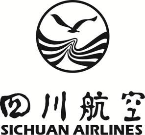
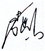
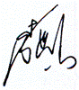

旅客、行李
国内运输总条件
General Conditions for Domestic
Transportation for Passenger and Baggage

总经理声明
《四川航空股份有限公司旅客、行李国内运输总条件》是依据《中华人民共和国民用航空法》、《中国民用航空旅客、行李国内运输规则》、《大型飞机公共航空运输承运人运行合格审定规则》（CCAR-121部）、《危险物品航空安全运输技术细则》、《危险品规则》、《消费者权益保护法》等其他现行有效的相关法律、法规制订。
总条件是四川航空股份有限公司国内旅客运输合同的一部分，是川航公司级的法规性文件，它所阐述的公司国内旅客、行李运输的方针、政策、规定、标准是公司从事国内旅客运输的客票销售、地面服务等各环节工作人员及地面服务代理人，在运行保障时必须依据的宗旨和准则。每一个与国内旅客、行李运输相关的部门和人员、包括分公司、运行基地、外站及地面服务代理人必须严格遵守并贯彻执行。
总条件的颁发实施，将对公司国内旅客运输中的客票销售、旅客服务、行李运输等各个方面的标准化、程序化、规范化管理起到指导和完善作用，从而确保公司的飞行运行在安全、正常、服务等方面都有不断的提高。

四川航空股份有限公司
总经理：
2016
年 12 月 01 日
目 录
1.0
定义…………………………………………………………01
2.0 适用范围……………………………………………………06
3.0 客票…………………………………………………………07
4.0 票价和税费…………………………………………………11
5.0 定座…………………………………………………………13
6.0 拒绝运输和限制运输………………………………………14
7.0 购票…………………………………………………………16
8.0 班期时刻、航班取消及变更………………………………17
9.0 客票变更……………………………………………………19
10.0 退票…………………………………………………………20
11.0 团体旅客……………………………………………………24
12.0 乘机…………………………………………………………24
13.0 行李运输……………………………………………………26
14.0 旅客服务……………………………………………………36
15.0 飞机上的行为………………………………………………38
16.0 附加安排……………………………………………………39
17.0 行政手续……………………………………………………39
18.0 连续承运人…………………………………………………40
19.0 损失责任及赔偿限额………………………………………40
20.0 生效与修改…………………………………………………41
1.0 定 义
《四川航空股份有限公司旅客、行李国内运输总条件》（以下简称“条件”）中的下列用语，除具体条款中有其他要求或另有明确规定外，含义如下：
1.1 “国内运输”指根据旅客运输合同，其发出地点、约定经停地点和目的地点均在中华人民共和国境内的航空运输。
1.2 “川航”是四川航空股份有限公司的简称。
英文名称：SICHUANAIRLINES，
国际航空运输协会IATA成员代码：3U，
国际航空运输协会IATA结算代码：876，
公司地址：成都双流国际机场，
网址：Http://www.sichuanair.com。
1.3 “航空公司代码”指专为识别特定航空承运人的两个字符。
1.4 “承运人”指使用民用航空器从事旅客、行李或者货物运输的公共航空运输企业，包括国内承运人、港澳台地区承运人和外国承运人。
1.5 “出票承运人”指在乘机联或有价票联电子客票交易中显示出数字代码的航空公司。出票承运人应为电子客票交易的控制与授权实体。
1.6 “销售承运人”指其代码被作为运输承运人记录在电子乘机联或有价票联上的航空公司。
1.7 “实际承运人”指提供实际航空运输及其附带服务的航空公司。当有双边协议时，例如代码共享协议，实际承运人可能不是销售承运人。
1.8 “川航规定”指川航为对旅客及其行李的运输进行管理而公布的并于填开客票之日有效的规定，包括有效的适用票价。
1.9 “销售代理人”指从事民用航空运输销售代理业务的企业。
1.10 “川航销售代理人”或“授权代理人”指经川航授权并代表川航，在约定的授权范围内代为销售航空客货运输产品及办理相关业务的销售代理人。
1.11 “地面服务代理人”指从事民用航空运输地面服务代理业务的企业。
1.12 “川航地面服务代理”指已被川航授权为其航班提供地面服务的地面服务代理人。
1.13 “旅客”指除机组成员以外经承运人同意在飞机上载运或已经载运的任何人。
1.14 “团体旅客”指统一组织的人数在10人（含）以上（或川航具体产品附有最低成团人数），航程、乘机日期、航班和舱位等级相同，并按同一类团体票价支付票款的旅客。凡购买婴儿、儿童及其他特种票价客票的旅客不得计算在团体人数内。
1.15 “婴儿”指开始旅行之日年龄不满两周岁的人（出生不满14天的婴儿不予承运）。
1.16 “儿童”指开始旅行之日年龄满两周岁但不满十二周岁的人。
1.17 “无陪儿童”是指开始旅行之日年龄满五周岁但不满十二周岁的，无18岁以上且有民事行为能力旅客陪伴单独乘机的人。
1.18 “定座”指对旅客预定的座位、舱位等级或对行李的重量、体积的预留。
1.19 “合同单位”指与川航签订定座、购票合同的单位。
1.20 “航班”指飞机按规定的航线、日期、时刻的定期飞行。
1.21 “旅客定座单”指旅客购票前必须填写的供承运人或其销售代理人据以办理定座和填开客票的业务单据。
1.22 “有效身份证件”指旅客购票和乘机时必须出示的由政府主管部门规定的证明其身份的证件。
如：居民身份证、按规定可使用的有效护照、军官证、武警警官证、士兵证、文职干部或离退休干部证明，16周岁以下未成年人的户口簿等证件。
1.23 “客票”是指承运人或其授权代理人销售或认可并赋予运输权利的有效文件，包括电子客票和纸质客票。“电子客票”是指由承运人或其授权代理人销售并赋予运输权利的以电子数据形式体现的有效运输凭证，是纸质客票的电子替代产品。纸质客票是指由承运人或代表承运人所填开的被称为“客票”及行李的凭证，包括运输合同条件，声明，通知以及乘机联和旅客联等内容。
1.24 “航空运输电子客票行程单”（以下简称行程单）是公共航空运输企业和航空运输销售代理企业在旅客购票时，向旅客提供的付款凭证。记录电子客票、运价信息的单据，用作旅客报销凭证，不作为通过机场安检以及登机的凭证。
1.25 “连续客票”指填开给旅客与另一本客票连在一起，共同构成一个单一运输合同的客票。
1.26 “联程客票”是指在一张客票上或由连续客票所组成的单一运输合同中，旅客的航程超过一个以上航班的运输客票。
1.27 “联程票价”是将旅客所乘航段的票价相加，或给予适当的优惠，作为全程票价，在单一运输合同中体现。
1.28 “来回程客票”指从出发地点至目的地点并按原航程返回原出发地点的客票。
1.29 “日”指日历日，一周包括七日。用于发通知时，通知发出日不计算在内；用于确定客票有效期限时，客票填开日或航班飞行开始日，均不计算在内。
1.30 “定期客票”指列明航班、乘机日期和定妥座位的客票。
1.31 “不定期客票”指未列明航班、乘机日期和未定妥座位的定票。
1.32 “乘机联”指客票中标明指“运输有效”的部分，在电子客票中指以电子数据显示存储在航空公司数据库的航班信息，表示旅客有权搭乘该联指定地点之间的航班。
1.33 “旅客联”指纸质客票中标明“旅客联”的部分，始终由旅客持有。
1.34 “运价”指航空公司公布的票价、费用和/或相关的使用条件。必要时，应取得相关部门的批准。
1.35 “正常票价”指在适用期内的头等、公务、经济各舱位等级中的最高票价，包括按成人适用正常票价50%付费的儿童票价和按成人适用正常票价10%付费的婴儿票价。
1.36 “特种票价”指不属于正常票价的其他票价。
1.37 “误机”指旅客未按规定时间办妥乘机手续或因旅行证件不符合规定而未能乘机。
1.38 “漏乘”指旅客在始发站办理乘机手续后或在经停站过站时未搭乘上指定的航班。
1.39 “错乘”指旅客乘坐了不是客票上列明的航班。
1.40 “超售”指承运人接受定座数超过航班飞机最大允许旅客座位数，以期满足更多旅客成行需求并将航班座位虚耗降到最低的销售行为。
1.41 “超编”是指航班由于机械、飞机调配等原因引发的机型更改、航班合并，最终造成的航班旅客“溢出”。
1.42 “代码共享航班”指承运人通过协议在另一承运人的航班上使用自己公司代码或多家航空公司在同一个航班上使用各自的航班号的航班。
1.43 “行李”指旅客在旅行中为了穿着、使用、舒适或便利而携带的必要或适量的物品和其他个人财物。除另有规定外，包括旅客的托运行李和自理行李。
1.44 “托运行李”指旅客交由承运人负责照管和运输并填开行李票的行李。
1.45 “随身携带物品”指在承运人限定的品种和数量范围内并经承运人同意由旅客自行携带进入客舱的零星小件物品。
1.46 “行李票”指纸质客票中与运输旅客托运行李有关的部分。
1.47 “行李牌识别联”指识别行李的标志和旅客领取托运行李的凭证。它包含有承运人标志和二字代码以及六位数的序号等内容。
1.48 “免除责任行李牌”指在收运行李时，发现有超过限制规定的行李应拒绝收运，而旅客仍坚持要求托运的情况下，则为超过限制规定的承运责任而栓挂免除责任行李牌。
1.49 “截止办理乘机登记手续时间”是指实际承运人规定的旅客应该办理完毕乘机登记手续的最晚时间。
1.50 “离站时间”指航班旅客登机后，关机门的时间。
1.51 “约定经停地点”指除出发地点和目的地点以外，在客票或承运人的班期时刻表内列明作为旅客旅行路线上预定停留的地点。
1.52 “中途分程”指经承运人事先同意，旅客在出发地点和目的地点间旅行时由旅客有意安排在某个地点的旅程间断。
1.53 “不可抗力”是指非正常的、无法预见的并且无法控制的情况，即使采取一切可能的措施，仍不能避免其后果的发生。
1.54 “退票”指由于旅客或川航或其他原因，未能使用部分或全部客票，在客票有效期内，按规定退还旅客票款的过程。
1.55 “非自愿退票”是指因航班取消、提前、延误、航程改变、或不能提供原订座位时，旅客要求退票。
1.56 “退票费”指旅客自愿退票，承运人依照规定所收取的费用。
1.57 “变更”是指包括航班、日期、舱位、航程、承运人的变更。
1.58 “变更费”是指根据运价使用条件，川航对旅客自愿提出要求更改原订航班计划而收取的费用，包括对航班、日期、舱位等的变更收费。
1.59 “票价价差”是指旅客自愿从较低等级舱位改为较高等级舱位或从较低票价改为较高票价的运价差额。
1.60 “损失”指在航空运输期间，因航空公司过失造成旅客的人身和财产损失。
1.61 “签转”指改变客票上列明的航班承运人代码。
1.62 “航班延误”是指航班实际到港挡轮挡时间晚于计划到港时间超过15分钟的情况。
1.63 “航班出港延误”是指航班实际出港撤轮挡时间晚于计划出港时间超过15分钟的情况。
1.64 “航班取消”是指因预计航班延误而停止飞行计划或者因延误而导致停止飞行计划的情况。
1.65 “机上延误”是指航班飞机关舱门后至起飞前或者降落后至开舱门前，旅客在航空器内等待超过机场规定的地面滑行时间的情况。
1.66 “大面积航班延误”是指机场在某一时段内一定数量的进、出港航班延误或者取消，导致大量旅客滞留的情况。某一机场的大面积航班延误由机场管理机构根据航班量、机场保障能力等因素确定。
2.0 适用范围
2.1 除2.2、2.3、2.4、2.5中另有规定外，本条件仅适用于在客票上“承运人”栏内列明川航的名称或者航空公司代码的国内运输
2.2在某些航班上，川航与其它承运人实施了“代码共享”，这意味着即使旅客定妥了川航的航班且旅客的客票上载明川航的名称或者代码，但是搭乘的可能是另一承运人运营的飞机。此种情形，在旅客定座或购票时，川航会将经营该航班的承运人告知旅客。
2.3 根据川航包机协议办理的运输，本条件仅适用于该包机协议和包机客票的条款中引用本条件的情形。
2.4 在本条件适用于川航提供的国内运输，如本条件与适用的法律或者川航的运价规则相抵触，则该适用的法律或者运价规则优先适用。
如果本条件的任何条款与适用的法律相抵触，则该条款无效。但是，本条件的其它条款仍然有效。
2.5 除本条件另有规定外，如果川航的任何其他规定和与本条件相抵触，则本条件优先适用。
3.0 客 票
3.1 一般规定
（1）对于电子客票，旅客应有一张以旅客的姓名及有效身份证件填开的有效电子客票，否则无权乘机。对于纸质客票，旅客未能出示根据川航的规定填开的并包括所乘航班的乘机联和所有其他未使用的乘机联和旅客联的有效客票，无权要求乘机；旅客出示残损客票或非经承运人或其销售代理人更改的客票，也无权要求乘机。
（2）每一客票上必须列明舱位等级，并在航班上定妥座位和日期后方可由川航接受运输。对未定妥座位的客票，川航或其销售代理人应按旅客的申请，根据适用的票价和所申请航班的座位可利用情况为旅客预定座位。
（3）旅客应在客票有效期内，完成客票上列明的全部航程。如果购买的优惠客票对旅行日期有特殊规定的，必须在该适用运价的规定时间内完成客票列明的全部航程。
（4）含有国内航段的国际联程客票，其国内航段的乘机联可直接使用，不需换开成我国国内客票后才能使用。
（5）旅客在我国境外购买的用国际客票填开的纯国内航空运输的国际客票，应换开成我国国内客票后才能使用。
（6）定期客票只适用于客票上列明的乘机日期和航班。
3.1.5在客票上，四川航空股份有限公司的名称被缩写为川航的代码“3U”
3.2 客票的有效期
3.3 客票有效期的延长
（1）取消旅客已经定妥座位的航班；
（2）取消的航班约定经停地点中含有旅客的出发地点、目的地点或中途分程地点；
（3）未能在合理的时限内按照班期时刻进行飞行；
（4）造成旅客已定妥座位的航班衔接错失；
（5）更换了旅客的舱位等级；
（6）未能提供事先已定妥的座位。
3.4 客票遗失
（1）在特定情况下使用纸质客票的旅客，客票全部或部分遗失或残损，或旅客出示的客票未能包括旅客联和所有未使用的乘机联，旅客应以书面形式向川航或其授权的销售代理人申请挂失。
（2）旅客申请挂失，须出示其有效身份证件，如申请挂失者不是旅客本人，需出示旅客本人和挂失人的有效身份证件，并提供原购票的日期、地点、原客票出票人联或其复印件、遗失地公安部门的证明以及足以证实该客票遗失的其他资料或证明。
（3）遗失客票如全部或部分已被冒用或冒退，川航不承担责任。
由于旅客原因造成已打印电子客票行程单遗失，按《航空运输电子客票行程单管理办法（暂行）》规定，不再补打印。
（1）定期客票遗失，川航原则上不予以补开新票。但在特殊情况下，经受理报失的川航直属销售部门批准，在原订航班停止办理乘机手续前向川航提供符合本条件
a.旅客须填写《四川航空股份有限公司遗失票证报失申请书》；
b.旅客须声明同意赔偿可能由此造成的川航的一切损失，包括已经或今后被他人冒用或冒退以及必要的诉讼费用。
（2）不定期客票遗失，只能申请退款，不能申请补开新客票。
（3）对未经查证的遗失客票，川航有权不予补开新客票。如旅客要求继续旅行，应按现行票价另购新票。
（4）定期客票补开客票应收取手续费人民币 200 元。
（5）补开的新客票不得办理退款或变更。
（1）客票遗失，旅客应当及时按
（2）遗失客票的退款金额和手续费：
a.如新购客票与所遗失部分的航程、航班、日期、原舱位相同或低于原舱位，则退还新购客票的票款，不收退票手续费；如高于原舱位，则只退还原遗失部分的票款，退款按非自愿退票计算，不收取手续费。
b.如旅客未另购新票或另购新票与遗失部分的航程、航班、日期不符，按川航自愿退票规定办理原遗失客票，以报失时间为准来收取退票费。
3.5 票联的顺序和使用
3.5.5客票上某些运输内容的变更，可能会导致票价的提高，如出发地点的变更或旅行方向的变更；很多票价仅对客票上载明的特定日期的航班有效，并且不得变更，或者是在支付相应的费用后方可变更。
座。
4.0 票价和税费
4.1 票价的适用
4.2 票款的交付
4.2.1票价和费用的支付，旅客应使用出票地国家或地区的货币，除非在旅客付款或付款前川航或川航的授权代理人指定使用另一种货币。由于当地货币不能兑换等原因，川航可以自行决定接受其它种类的货币。除川航与旅客另有协议外,票款一概现付。
4.3 革命伤残军人、儿童、婴儿票价
4.3.4有成人陪伴儿童及婴儿购买的客票服务等级须与其陪伴人一致（同为经济舱或同为头等舱）。
4.4 税费及费用
5.0 定 座
5.1定座基本要求
5.1.1川航或者川航的授权代理人将记录旅客的航班定座情况。如旅客提出要求，川航将给旅客出具书面的定座记录。
5.1.2旅客定座后，应在川航规定的购票时限内支付票款。否则，旅客所预定的座位将会被自动取消。在旅客定座时,川航或川航授权的代理人将告知旅客购票时限。
5.1.3某些特种票价含有限制或拒绝更改、取消定座的条件。有关票价的具体使用条件，可向川航查询。
5.1.4旅客购票时须凭旅客本人的有效身份证件办理。如果旅客购买电子客票，购票时使用的有效身份证件应与旅客办理乘机登记手续时使用的相同。
5.2 个人资料
5.2.1旅客认可提供给川航与旅客旅行有关的个人资料用于定座、购票及其它相关服务。为此，旅客同意川航保留和使用旅客的个人资料，并可将该资料传送给川航的有关部门、授权代理人、政府部门、其它相关承运人或者上述服务的提供者。对于旅客提供给川航的个人资料，川航将妥善留存加以保密。
5.2.2旅客个人资料的真实性由旅客本人负责，川航没有审查的义务。
5.2.3旅客如拒绝提供个人资料，川航有权不予定座。
5.3 定座优先权
对于非自愿改变航程的旅客，在航班有可利用座位的条件下，可
优先定座。
5.4不保证提供旅客申请或指定的机上座位
川航将尽力满足旅客预先申请机上座位的要求。但是，川航不能保证提供任何指定的座位。出于运行、安全或安保的需要，川航始终保留分配或者重新分配机上座位的权利，即使在旅客登机之后。
5.5 更改或取消座位
5.5.1旅客更改或者取消定座，应当在川航规定的时限内提出。票价附有条件的，旅客更改或者取消定座，应当符合该条件的规定。
5.5.2如旅客不使用已定妥的座位，也未告知川航或其授权代理人，川航可以取消旅客所有已经定妥的续程和回程座位。
5.6座位再确认
5.6.1对于已定妥的川航续程或回程航班座位，川航不要求座位再确认。但是，如果其它承运人要求旅客对续程或回程的座位进行再确认，而旅客未确认，该承运人有权取消该旅客的续程或者回程航班定座。
5.6.2旅客需自行了解与旅行有关的承运人对座位再确认的要求。如需再确认，旅客应向客票上载明其代码的承运人办理座位再确认手续。
6.0 拒绝运输和限制运输
6.1 拒绝运输权
（1）为遵守国家的有关法律、政府规定和命令；
（2）旅客的精神或身体状况，包括旅客受酒精或药物的影响，可能对其本人、其他旅客、机组人员或财产造成危险或危害；或者可能危及或者影响其他旅客或者机组人员的安全、健康、便利或舒适；
（3）旅客不遵守川航的规定；
（4）旅客拒绝接受安全检查；
（5）旅客未支付适用的票价、费用和税款或未承兑其与川航之间的信用付款；
（6）旅客未能出示国家的法律、政策规定、命令、要求或旅行条件所要求的本人有效身份证件；
（7）旅客出示的客票是非法获得或不是在出票承运人或其销售代理人处购买的，或属已挂失或被盗的、或是伪造的、或不是由承运人或其销售代理人更改的乘机联或乘机联被涂改的；
（8）出示客票的人不能证明本人即是客票上“旅客姓名”栏内列明的人；
（9）旅客拒绝遵守川航有关安全或安保方面的指令；
（10）由于身体残疾，适合于该人残障的唯一座位是出口座位；
（11）怀孕超过36周（含）的孕妇；
（12）未满 14 天的初生儿；
（13）在空中要求进行静脉注射者；
（14）狂躁型精神病患者，可能对其他旅客、机组人员或其自身造成危害；
（15）有特殊恶臭或有怪癖，可能引起其他旅客厌恶者；
（16）近期遭受过严重外伤或进行过重大外科手术，伤口尚未完全愈合者；
（17）不能提供川航规定的证明文件的患病旅客；
（18）患有甲类传染性疾病以及患有乙类传染病中按甲类传染病预防和控制的传染性非典型肺炎、炭疽中的肺炭疽和人感染高致病性禽流感旅客;
（19）处于极严重或危急状态的心脏病患者，如严重的心力衰竭，出现紫绀症状或心肌梗塞者（在旅行前六周内，曾发生过梗塞者）；
（20）严重的中耳炎，伴随着耳咽管堵塞症的患者；
（21）近期患有自发性气胸的病人或近期做过气胸造形的神经系统病症的患者；
（22）大纵膈瘤，特大疝肿及肠梗阻的病人；
（23）头部损伤颅内压增高及颅内骨折者；
（24）下额骨骨折近期使用金属线连接者；
（25）在过去30天内患过脊髓灰质炎的病人；延髓形脊髓灰质炎患者；
（26）带有严重咯血、吐血、出血、呕吐及呻吟症状的病人。
6.2 对被拒绝运输旅客的安排对被拒绝运输的旅客，川航按下列规定办理：
在川航运行中，当拒绝运输旅客的情况发生时，运输服务部门对
被拒绝运输的旅客按川航《航站运行手册》、《国内客运销售业务手册》以及《地面服务保障手册-国内业务》中的有关规定予以必要的事后处理。
6.3 限制运输
无成人陪伴儿童、患病旅客、孕妇、残疾旅客或接受司法和行政强制措施人员等特殊旅客，只有在符合川航及有关承运人规定的条件下，事先向川航提出，经川航及有关承运人预先同意并在必要时做出安排后方予载运；涉及残疾人旅客运输按照《残疾人航空运输管理办法》执行。
7.0 购 票
7.1 一般规定
7.1.1旅客可以通过川航的网站或致电川航的服务热线，或者在川航售票处或授权的代理人售票处预订座位和购买客票。
川航网站：http://www.sichuanair.com
川航热线：95378、028-88888888
7.1.2旅客购票须凭本人有效身份证件或公安机关出具的其他有效身份证件，并填写《旅客定座单》，同时确保其与办理乘机登记手续时使用的证件相同。
7.2 川航或其销售代理人应根据旅客的要求，出售单程、联程或来回程客票。
7.3 川航或其销售代理人的售票场所应设置班期时刻表、航线图、航空运价表和旅客须知等必备资料。
7.4 行程单最迟应在出票之日30天内打印。
8.0 班期时刻、航班取消及变更
8.1 班期时刻
8.2 航班取消及变更
（1）为国家的法律、行政法规、规章、命令或要求；
（2）为保证飞行安全；
（3）其他无法控制或不能预见的原因。
8.3 由于8.2原因之一，川航取消或延误航班，因而未能向旅客提供已定妥的座位（包括舱位等级），或未能在旅客的中途分程地点或目的地点停留，或造成旅客已定妥座位的航班衔接错失，川航应当考虑旅客的合理需要并采取以下措施之一：
8.4 川航将采取一切必要的措施来避免旅客以及旅客的行李延误。如川航已经采取了一切必要的措施或不可能采取该措施的，川航不承担责任。
8.5 延误、取消航班的旅客服务
对延误、取消航班的旅客，川航应分别按本条件14.2的规定提供服务。
9.0 客票变更
9.1 非自愿变更
（1）为旅客优先安排有可利用座位的川航航班；
（2）征得旅客及有关承运人的同意后，办理签转手续。
（1）为旅客优先安排有可利用座位的川航航班；
（2）征得旅客及有关承运人的同意后，办理签转手续；
（3）变更原客票列明的航程，安排旅客乘坐川航和/或其他承运人的航班，或者双方认可的其它运输方式，将旅客运达目的地或中途分程地点，票款、逾重行李费和其他服务费用的差额多退少不补。
9.2 自愿变更
旅客购票后，如要求改变航班、日期，应按照现行《川航国内
旅客运输票价和使用条件》及特种票价使用相关规定办理。
9.3 签转
（1）旅客使用的客票无签转限制。
（2）旅客要求变更的承运人与川航签有联运协议，可以相互填开或接收票证。
（3）签转后承运人适用票价高于川航票价，需补齐差额后进行签转；若签转后承运人适用票价低于川航票价，允许签转但差额不退，或按自愿退票处理。
10.0 退 票
10.1 一般规定
10.1.1
10.2 退票受款人
10.3 退票期限
旅客要求退票，最迟应在开始旅行之日起（客票完全未使用的，
在填开之日起）十二个月内提出。否则川航有权拒绝办理。
10.4 退票地点
（1）在出票地要求退票，只限在原购票的售票处办理；
（2）在出票地以外要求退票，可由当地的川航直属售票处或经川航特别授权代理办理；特殊产品客票如另有退票地限制规定的除外。
10.5 非自愿退票
10.5.1如果川航取消航班，未能合理地按照航班时刻飞行，未能在旅客的目的地点或中途分程地点降停，或者造成旅客错失已定妥座位的衔接航班，退款金额按下列规定办理：
（1）客票全部未使用，退还全部已付票款（含税款），不收取退票手续费。
（2）在航班始发站，非自愿退票不论是川航原因还是非川航原因，均退还旅客所付的全部票款。
（3）非川航原因（如天气、航空管制等），造成航班在经停地延误或取消飞行，应使用旅客实付的全航程票面价减去已使用航段对应舱位票款，剩余金额退还旅客。
（4）因川航原因（如机务维护、航班调配、商务等）在经停地延误或取消飞行,退还经停地至目的地原实付票款对应舱位的票款，且不超过原机票票款。
（5）旅客自愿变更航班并支付变更费用后，其所变更的航班发生不正常时，旅客要求退票，不收退票费，但已付变更费用不退。
（1）旅客因病不能旅行而要求退票，必须在航班规定起飞时间前提出并退座。未按要求退座的按自愿退票处理。
（2）旅客因病不能旅行而要求退票，必须提供县、市级（或相当于这一级）医疗机构出具的客票列明的航班飞行期间不适宜乘机的证明资料（包括诊断书原件、旅客不能乘机的证明原件、病历原件，医药费在100元以上的交费单原件或复印件），免收退票费。
（3）患病旅客的陪伴人员要求退票，必须在航班规定起飞时间前与患病旅客同时提出并退座，每一患病旅客的陪伴人员人数不得多于2人。陪伴人员客票的航班、日期及航程必须与患病旅客完全相同。
10.6 自愿退票
按照现行《川航国内旅客运输票价和使用条件》及特种票价规定办理。旅客误机后的退票按照航班起飞后的退票规定执行。
10.6.1如果旅客的客票无不得退票限制，且不属于本条件10.5规定
范围的退票，退款金额按下列规定办理：
（1）如果客票尚未使用，退款额等于已付票价扣除合理的服务费或退票费之后的余额；
（2）如果客票已部分使用，退款额等于已付票价减去已使用航段适用票价的差额，再扣除合理的服务费或退票费以后的余额，已使用航段税费不退。
（3）享受革命伤残军人、因公致残的人民警察优惠票价的客票，如要求退票免收退票费。
（4）持婴儿客票的旅客要求退票，免收退票费。
（5）旅客在航班的经停地自动终止旅行，该航班未使用航段的票款不退。
10.7 退款至信用卡或借记卡
如果旅客购票时使用信用卡或借记卡支付票款,则票款只能被退
还到原卡账户上。川航将根据本条规则以旅客原支付的票款金额与币种为基础计算退款额。由于货币兑换差额的原因,退还到旅客卡中的票款额可能与信用卡或借记卡公司记入的原借款额有所不同。旅客无权就此差额向川航提出退款索赔。
10.8 拒绝退票
除了非自愿退票外，有以下任何一种或一种以上情况的，有关单
位应拒绝退票：
10.8.1逾期未提出退票申请；
10.9 退回税款
退票时须一并退还旅客购票时缴交的尚未发生的税款。无余款可
退或不得退票的客票，也可单独退还，且不扣除手续费，但需在退款期限内办理。
11.0 团体旅客
11.1 购票时限
团体旅客可以在开放的航班上申请订座，定妥座位后，应在规定
或预先约定的时限内购票，否则，所订座位不予保留。
11.2 变更
在购买团体客票后，如自愿要求改变航班、日期、舱位等级、
承运人，按团体旅客自愿退票办理。
团体旅客非自愿变更，按照9.1非自愿变更规定处理。
11.3 退票
（1）团体旅客购票后自愿要求退票，除川航具体产品另有规定外，按现行《川航国内旅客运输票价和使用条件》执行。
（2）团队客票的自愿退票手续均在原出票地点办理。
（1）团体旅客非自愿退票，始发地退还全部票款。
（2）团体旅客非自愿退票，可在原购票地、航班始发地、经停地、终止旅行地的川航售票处或引起非自愿退票发生地的川航特别授权销售代理人办理。
11.4 误机
团体旅客误机，客票将作废，票款不退。
12.0 乘 机
12.1 一般规定
12.1.2如果旅客购买的是电子客票，旅客办理乘机登记手续时使用的有效身份证件应与购票时使用的相同。
12.1.3如旅客未能按时到达川航的乘机登记柜台或登机门，或未能出示其有效身份证件及运输凭证，或未能做好旅行准备，川航为不延误航班可取消旅客已定妥的座位。对旅客由此所产生的损失和费用，川航不承担责任。
12.1.4川航办理航班乘机手续的时间：
（1）100座以下的飞机，应在不少于航班离站时间前60分钟开始办理；100座（含）以上的飞机，应在不少于航班离站时间前90分钟开始办理； 200座以上的飞机，应在不少于航班离站时间前120分钟开始办理。
（2）各机场停止办理乘机手续时间（简称截载时间）不一致，如旅客对川航航班出港机场截载时间不了解，应提前向销售人员进行咨询或登录川航官方网站http://www.sichuanair.com查询。旅客应预留充足的时间办理乘机手续，如果旅客未在规定的航班截载时间之前办理乘机手续，川航有权取消旅客的定座。
（3）对于旅客旅行中其它承运人办理乘机登记手续的截止时间，旅客需向相关承运人查询。为了旅行顺畅，建议旅客预留充足的时间办理乘机登记手续。
12.1.5川航及其地面服务代理人应按时开放乘机登记柜台，按规定接受旅客出具的客票，快速、准确地办理乘机登记手续。
12.2 乘机前，旅客及其行李和免费随身携带物品必须经过安全检查。
12.3 旅客误机
12.4 旅客漏乘
12.5 旅客错乘
12.6 航班超售
13.0 行李运输
13.1不得作为行李运输的物品：
由于物品的危险性、不安全性，或由于其重量、尺寸、形状或者性质，或考虑到包括但不限于飞机机型的因素，易碎或易腐物品，带有明显异味的物品；
13.2 不得作为托运行李运输的物品：
托运行李中不得放置或夹带现金、有价票证、珠宝、贵重金属及其制品、古玩字画、电脑、个人电子设备、样品等贵重物品、易碎或易损坏物品、易腐物品、锂电池、重要文件和资料、旅行证件等物品以及个人需定时服用的处方药。川航对托运行李中放置或夹带上述物品的遗失和损坏，按一般托运行李承担责任。
13.3 限制运输的物品：
下列物品只有在符合川航运输条件的情况下，并经川航同意，方
可接受运输：
13.4 行李包装及体积、重量限制
（1）托运行李必须包装完善、锁扣完好、捆扎牢固，能承受一定的压力，能够在正常的操作条件下安全装卸和运输。对包装不符合要求的行李，川航可拒绝收运或不承担损坏、破损的赔偿责任。托运行李应符合下列条件：
a.行李内、外应有旅客的姓名、联系方式和详细地址；
b.两件（含）以上物品不应捆为一件行李托运；
c.行李上不应附插（带）其他物品。
（2）托运行李每件最大重量不能超过
（3）对易碎、包装不符、易腐、旅客晚交运行李，超过托运行李尺寸、重量和交运时有破损的行李应拴挂免除责任行李牌，以免除川航相应的赔偿责任，同时：
a.应明确告知旅客所免除责任的项目；
b.应在所免除责任的项目上做标记；
c.旅客应在“旅客签字”栏内签字。
13.4.2随身携带物品
川航限定随身携带物品的重量，持头等舱客票的旅客，每人可随身携带两件物品；持公务舱或经济舱客票的旅客，每人只能随身携带一件物品。每件随身携带物品的体积不得超过20×40×55厘米,
每件随身携带物品的重量不超过5公斤。超过上述重量、件数或体积限制的随身携带物品，应作为托运行李运输。
13.5 免费行李额及逾重行李费
（1）每位旅客的免费行李额：持成人或儿童客票的头等舱旅客为
（2）搭乘同一航班前往同一目的地的两个（含）以上的同行旅客，如在同一时间、同一地点办理行李托运手续，其免费行李额可以按照各自的客票价等级标准合并计算。
（3）旅客自愿改变舱位等级，应按照新购票的票价等级享受免费行李额；旅客非自愿改变舱位等级，应按照原票价等级享受免费行李额。
（4）旅客使用国际票证的连续客票，且国内航段实际承运人为川航时，应视为构成国际运输国内航段，其免费行李额按国际航线适用的行李运输规则执行。
（5）旅客国内客票与国际客票分离使用的（即国内航段非国际票证的连续客票），则不构成国际运输国内航段，该旅客的免费行李额应分别按各航段适用的国内、国际航线免费行李额执行。
13.5.2逾重行李费
（1）旅客的托运行李超过免费行李额的部分，称为逾重行李，应当支付逾重行李费。
（2）收取逾重行李费，应填开逾重行李票。
（3）逾重行李费率以每公斤按逾重行李票填开当日所适用的经济舱票价的1.5％计算。收费总金额以人民币元为单位，尾数四舍五入。
13.6 行李声明价值
13.7 行李的收运
（1）对本条件13.1和13.2款所列不得作为行李运输的物品，我们有权拒绝运输,或者在发现后拒绝继续运输。
（2）旅客的托运行李，如属于或夹带有本条件13.2所列的物品，川航有权拒绝接受该行李作为托运行李运输。
（3）旅客携带了属于本条件13.3所列的物品，如旅客没有或拒绝遵守川航的限制运输条件，川航有权拒绝接受该物品的运输。
（4）旅客的托运行李或随身携带物品，如因其形态、包装、体积、重量或特性等原因不符合川航运输条件，川航应请旅客加以改善，如旅客不能或拒绝改善，川航有权拒绝接受该行李的运输。
出于安全和安保需要，川航对旅客及其行李进行安全检查，扫描或者X射线检查。必要时，可会同有关部门进行检查。如果旅客拒绝检查，川航有权拒绝接受该行李的运输。
13.7.3
（1）旅客必须凭有效客票托运行李。
（2）川航一般只在航班离站当日办理乘机手续时收运行李。如旅客要求提前托运，可事先约定。
（3）川航对旅客托运的每件行李应拴挂行李牌，并将其中的识别联交给旅客。
（4）旅客托运有运输责任争议的行李时，川航应经旅客书面同意后，拴挂免除责任行李牌，以免除川航相应的运输责任。只限于符合本条件
（1）旅客的托运行李，应与旅客同机运送，特殊情况下不能同机运送时，川航应向旅客说明，并优先安排在载量允许的后续航班上运送。
（2）旅客的逾重行李在飞机载量允许的条件下，应与旅客同机运送。如载量不允许，而旅客又拒绝使用后续可利用航班运送，川航可拒绝收运旅客的逾重行李。
（1）小动物是指家庭驯养的狗、猫、鸟或其它玩赏宠物。野生动物和具有形体怪异或易于伤人等特性的动物，如蛇等，不属于小动物范围。
（2）旅客托运小动物必须在定座时提出，并提供动物检疫证明，经川航同意后方可托运。
（3）旅客应在乘机的当日，按川航指定的时间，将小动物自行运至机场办理托运手续。
（4）装运小动物的容器应符合下列要求：
a.能防止小动物破坏、逃逸和防止小动物将身体某一部位伸出容器，损坏和伤害人员、行李、货物或飞机；
b.能保证小动物站立和适当活动，保证空气流通，不致使小动物窒息；
c.能防止粪便渗溢，以免污染飞机、机上设备及其他物品。
d.旅客携带的小动物，必须装在货舱内运输。
e.小动物及其容器和携带的食物的重量，不得计算在旅客的免费行李额内，应按逾重行李交付运费。
f.小动物运输不能办理声明价值。
g.旅客应对所托运的小动物承担全部责任。在运输中除川航原因外出现的小动物患病、受伤或死亡，川航不承担责任。
（1）导盲犬、助听犬的运输必须在定座时提出，在符合川航运输条件并经川航同意后，可由盲人或聋人旅客本人带入客舱运输。导盲犬、助听犬连同其容器和食物可以免费运输，不计算在免费行李额内。
（2）盲人或聋人旅客对携带的导盲犬、助听犬可能对其他旅客或川航造成的所有损害或伤害承担全部责任。
（1）外交信袋应当由外交信使随身携带，自行照管。根据外交信使的要求，川航也可以按照托运行李办理，但川航只承担一般托运行李的责任。
（2）外交信使携带的外交信袋和行李，可以合并计重或计件，超过免费行李额部分，按逾重行李的规定办理。
（3）外交信袋运输需占用座位时，旅客必须在定座时提出，经川航和有关承运人同意，方可予以运输。
（4）占用每一座位的外交信袋的总重量不得超过
外交信袋占座只能订F/Y舱，不收民航发展基金（如有燃油附加费需收取），票价按照旅客购票舱位的最高公布运价收取。
（5）机要交通人员携带的机要文件，按本条的规定办理。
旅客的托运行李和随身携带物品中，凡夹带国家规定的禁运物品、限制携带物品或危险物品等，其整件行李称为违章行李。对违章行李，川航按下列规定处理：
（1）在始发地发现违章行李，川航有权按照13.7.1（1）、（2）款的规定拒绝收运；如已承运，有权取消运输，或将违章夹带物品取出后运输，已收逾重行李费不退。
（2）在经停地发现违章行李，应立即停运，已收逾重行李费不退。
（3）对违章行李中夹带的国家规定的禁运物品、限制携带物品或危险物品，交有关部门处理。
（1）旅客在始发地要求退运行李，必须在行李装机前提出，如旅客退票，已收运的行李也必须同时退运。以上退运，均退还已收逾重行李费。
（2）旅客在经停地点退运行李，除时间不允许外，可予以办理，但未使用航段的已收逾重行李费不退。
（3）办理声明价值的行李退运时，在始发地退还已交付的声明价值附加费，在经停地不退已交付的声明价值附加费。
（4）由于川航的原因，需要安排旅客改乘其他航班，行李运输应随旅客作相应的变更，已收逾重行李费多退少不补；已交付的声明附加费不退。
13.8 行李交付
行李自到达的次日起，超过180日仍无人认领，川航可按照无法交付行李的有关规定处理。对于旅客行李中的鲜活、易腐物品，不受上述时间限制。
13.9 行李不正常运输的处理
13.10 行李赔偿
（1）旅客的托运行李从托运时起到交付时止，如发行延误、丢失或损坏，川航应当承担责任。
（2）川航证明为了避免延误损失的发生已经采取了一切必要措施或不可能采取措施的，不承担责任。
（3）托运行李的损失完全是由于行李本身的自然属性、质量或缺陷造成的，川航不承担责任。
（4）由于旅客行李内装物品造成该旅客伤害或其行李损失，川航不承担责任。由于旅客行李内装物品对他人造成伤害或对他人物品或川航财产造成损失，旅客应当赔偿川航的所有损失和由此支付的一切费用。
（5）对于旅客在托运行李内夹带的本条件13.2所列物品的丢失或损坏，川航只按一般托运行李承担赔偿责任。
（6）在联程运输中，川航仅对发生在其承运的航线上的行李损失承担赔偿责任。
（1）旅客的托运行李全部或部分损坏、丢失，赔偿金额每公斤不超过人民币100元。如行李的价值每公斤低于100元时，按实际价值赔偿。
（2）旅客丢失行李的重量按实际托运行李的重量计算，如果无法确定丢失的行李重量，每一旅客的丢失行李最多只能按该旅客享受的免费行李额赔偿。
（3）行李损坏时，按照行李降低的价值赔偿或负担修理费用。行李箱损坏，赔偿金额按行李箱自身重量每公斤不超过人民币100元。
（4）旅客的丢失行李如已办理行李声明价值，川航应按声明的价值赔偿。行李的声明价值高于实际价值时，应按实际价值赔偿。
（5）由于发生在上、下飞机期间或飞机上的事件造成旅客的随身携带物品灭失，川航承担的最高赔偿金额每位旅客不超过人民币3，000元。
（6）行李赔偿时，对赔偿行李收取的逾重行李费应退还，已收取的声明价值附加费不退。
（7）构成国际运输的国内航段，行李赔偿按适用的国际运输行李赔偿规定办理。
（8）已赔偿的丢失行李找到后，川航应尽快通知旅客。旅客可将自己的行李领回，退还全部赔偿，但临时生活用品补偿费不退。发现旅客有明显的欺诈行为，川航有权追回全部赔款。
旅客的托运行李丢失或损坏，应按本条件
13.10.4
（1）托运行李发生损失时，如有索赔要求，有权提出索赔的人应当在发现损失后向川航书面提出异议。托运行李发生损失的，至迟应当自收到托运行李之日起7日内提出；托运行李发生延误的，至迟应自托运行李交付旅客处置之日起21日内提出，否则就不能向川航提出索赔诉讼。
（2）关于赔偿责任的诉讼时效期间为两年，应从飞机到达目的地点之日起，或从飞机应当到达目的地点之日起，或从运输终止之日起
计算，否则就丧失任何损失的诉讼权
14.0 旅客服务
14.1 一般服务
14.2 不正常航班的服务
14.2.1 信息通告
在航班状态发生变化之后的30分钟内，川航应通过各种渠道及时、准确地向旅客发布航班出港延误或者取消信息，包括航班出港延误或者取消原因及航班动态。
14.2.2 服务要求
航班出港延误或者取消时，川航及航空销售代理人或者地面服务代理人应按照本条件，做好旅客服务工作:
（1）在航班出港延误或者取消时，应当优先为残疾人、老年人、孕妇、无成人陪伴儿童等需特别照料的旅客提供服务。
（2）航班出港延误或者取消时，根据本条件及《客票使用条件》，为旅客妥善办理退票或者改签手续。
（3）及时为旅客提供航班延误或者取消的书面证明。
14.2.3 服务标准
（1）由于机务维护、航班调配、机组等川航自身原因，造成航班在始发地出港延误或者取消，川航应向旅客提供餐食或者住宿等服务。
（2）由于天气、突发事件、空中交通管制、安检以及旅客等非川航原因，造成航班在始发地出港延误或者取消，川航应协助旅客安排餐食和住宿，费用由旅客自理。
（3）国内航班在经停地延误或者取消，无论何种原因，川航均应向经停旅客提供餐食或者住宿服务。
（4）国内航班发生备降，无论何种原因，川航均应当向备降旅客提供餐食或者住宿服务。
14.2.4 机上延误处置
（1）发生机上延误后，应每30分钟向旅客通告延误原因、预计延误时间等航班动态信息。
（2）机上延误期间，在不影响航空安全的前提下，应保证盥洗设备的正常使用。
（3）机上延误超过2小时（含）的，应当为机上旅客提供饮用水和食品。
（4）机上延误超过3个小时（含）且无明确起飞时间的，应在不违反航空安全、安全保卫规定的情况下，安排旅客下飞机等待。
14.2.5 延误补偿条件及标准
由于机务维护、航班调配、机组等航空公司的原因，造成航班延误，川航将根据延误的实际情况，向旅客提供经济补偿：
（1）延误4小时（含）以上不超过8小时，向旅客补偿人民币200元或等值货币。
（2）延误8小时（含）以上，向旅客补偿人民币400元或等值货币。
（3）多种原因导致航班持续延误，以其中川航原因所致延误时段计算延误时间，并按照前述标准提供经济补偿。
14.2.6 补偿方式
经济补偿有多种方式，川航将根据并尊重旅客本人的意愿和选择，通过现金、里程、代金券等任意一种方式予以兑现。
15.0 飞机上的行为
15.1 如果旅客在飞机上的行为危及航空器或者航空器上任何人或者财产的安全，或者妨碍机组人员履行职责，或者不遵守机组的指示，包括但不限于吸烟、酗酒或吸食毒品，对机组或其他旅客造成或有可能造成不适、不便、损害或者伤害的行为，川航可以采取合理的措施，包括实施管束，以阻止该行为的继续。该旅客有可能在任何地点被要求下机并被拒绝续运，而且该旅客有可能因客舱内的不当行为被起诉。
15.2 旅客应严格遵守机上安全设备使用规定，紧急情况下，应在机组（含乘务组）的指导下，使用机上应急设备、装具等；非应急情况下，严禁私自动用有关设备，如：救生衣、氧气瓶、防烟面具等，如造成后果，川航保留追究当事人责任的权利。
15.3 从飞机为开始飞行而关闭舱门时刻起，至结束飞行打开舱门时刻止，飞机上的旅客不得开启和使用移动电话（包括带有飞行模式的移动电话）、对讲机、收音机、遥控玩具和其它带遥控装置的电子设备、锂电池移动电源（俗称充电宝）、电子香烟（或称如烟）及局方或川航认为干扰飞机安全运行的其它无线电发射装置。未经川航允许，旅客不得在飞机上使用除便携式录放机、助听器和心脏起搏器以外的任何电子设备。
15.4 航班禁烟
川航所有的航班均已禁烟，机上所有区域均不允许吸烟。
15.5 酒精饮料
客舱内，除川航航班上供应的含酒精饮料外，不得饮用其他含酒
精饮料。
15.6 安全带
当旅客在机上就坐时，应按要求全程系好安全带。
16.0 附加服务安排
16.1 如果川航为旅客安排由第三方提供的航空运输之外的服务，或者川航为您出具地面运输、旅馆预订或者车辆租赁等由第三方提供的（非航空）运输或者服务的票证或者收款凭证，在安排上述附加服务时，川航仅作为旅客的代理，而对于旅客能否得到此类服务及其服务质量不承担责任。第三方服务提供者的条款和条件适用于该服务。
16.2 如果川航向旅客提供地面运输，本条件不适用于该地面运输。
17.0 行政手续
17.1 旅客必须遵守中华人民共和国的法律、政府规定、命令、要求和旅行条件的各项规定，服从政府或机场管理部门和川航的任何安全检查。
17.2 旅客应出示国家的法律、政府规定、命令、要求或旅行条件所要求的有效证件。川航对未遵守国家法律、规定、命令、要求或旅行条件或其证件不符合要求的旅客，保留拒绝载运的权利。
17.3 政府有关主管部门检查旅客的托运行李或自理行李时，旅客应当到场。对旅客未到场接受检查而发生的任何损失，川航不承担责任。
18.0 连续承运人
18.1川航和其它承运人依据一本客票或者连续客票履行的运输，应当被视为一个单一的运输。另请参见本条件19.1.1款之规定。
19.0 损失责任及赔偿限额
19.1 损失责任
19.1.1川航对旅客的运输责任受本条件约束，旅客航程中的其它承运人对旅客的运输责任受其各自的运输条件约束。
19.1.2川航仅对在客票承运人栏中填有川航代码的航班或航段在运
输过程中导致的损害承担责任。如果川航为其它承运人的运输填开客票或者办理托运行李，仅作为该承运人的代理人为上述行为。但对于托运行李，旅客可以向客票及行李票上列明的第一或者最后承运人索赔。
19.1.3 对于因川航遵守适用的法律、法规、政府规章和规定或由于旅客不遵守上述法律、法规、政府规章和规定而引起的任何损失，川航不承担责任。
19.1.4 除本条件另有规定外，按照适用的法律法规，川航对旅客承
担的责任仅限于经证实的损失和费用。川航对间接的或随之引发的损失不承担责任。
19.1.5 如果损害是由于旅客的过失造成或促成的，应按照适用的法律法规，相应免除或者减轻川航的赔偿责任。
19.1.6川航的运输合同，包括本条件以及免除或限制责任的条款，同样适用于川航的代理人和受雇人。任何情况下，从川航及川航的代理人和受雇人获取的赔偿总额不得超过规定的责任限额。
19.1.7除非有明确规定，本条件不应使川航放弃适用的法律、法规有关免除或限制川航责任的任何规定。
19.1.8川航对因旅客的健康状况引起或者加重的任何疾病、受伤或致残，包括死亡，不承担责任。
19.2 赔偿限额
川航对每名旅客死亡、受伤的赔偿责任限额为人民币400,000元。
20.0 生效与修改
20.1 本条件（03-02版）自2017年1月1日起生效并施行。原制定施行的《四川航空股份有限公司旅客、行李国内运输总条件》（03-01版）同时作废。
20.2 川航有权依照中国民用航空局规定的程序，不经通知修改其运输条件、运输规定、票价和费用。但此类修改不适用于修改前已经开始的运输。川航的工作人员、销售代理人或雇员都无权更改或违反川航适用的运输条件、运输规定、票价和费用。
20.3 本条件解释权属四川航空股份有限公司。
旅客、行李
国际运输总条件
General Conditions for international
transportation of passenger and baggage
总经理声明
《四川航空股份有限公司旅客、行李国际运输总条件》是依据《蒙特利尔公约》、《华沙公约》、《中华人民共和国民用航空法》、《中国民用航空旅客、行李国际运输规则》、《大型飞机公共航空运输承运人运行合格审定规则》（CCAR-121部）、《危险品规则》等其他现行有效的相关法律、法规制订。
总条件是四川航空股份有限公司国际旅客运输合同的一部分，是川航公司级的法规性文件，它所阐述的公司国际旅客、行李运输的方针、政策、规定、标准是公司从事国际旅客运输的客票销售、地面服务等各环节工作人员及地面服务代理人，在航站运行时必须依据的宗旨和准则。每一个与国际旅客、行李运输相关的部门和人员、包括分公司、营业部、办事处及地面服务代理人必须严格遵守并贯彻执行。
总条件的颁发实施，将对公司国际旅客运输中的客票销售、值机服务、行李运输等各个方面的标准化、程序化、规范化管理起到指导和完善作用，从而确保公司的飞行运行在安全、正常、服务等方面都有不断的提高。

四川航空股份有限公司
总经理：
2016
年 01 月 01 日
目 录
第一章 定义……………………………………………………01
第二章 适用范围………………………………………………04
第三章 客票……………………………………………………05
第四章 票价和费用……………………………………………09
第五章 定座……………………………………………………10
第六章 购票……………………………………………………11
第七章 乘机……………………………………………………12
第八章 行李运输………………………………………………13
第九章 班期时刻、航班取消及变更…………………………22
第十章 客票变更………………………………………………24
第十一章 退票……………………………………………………25
第十二章 飞机上的行为…………………………………………28
第十三章 拒绝运输和限制运输…………………………………28
第十四章 附加服务安排…………………………………………30
第十五章 行政手续………………………………………………30
第十六章 旅客服务………………………………………………31
第十七章 连续承运人……………………………………………32
第十八章 损失责任………………………………………………32
第十九章 生效与修改……………………………………………33
第一章 定 义
第一条 四川航空股份有限公司《旅客、行李国际运输总条件》（以下简称“条件”）中的下列用语，除具体条款中有其他要求或另有明确规定外，含义如下：
（一）“川航”是四川航空股份有限公司的简称，在客票上，川航的两字代码为“3U”。
（二）“公约”是指根据合同规定适用于该项运输的1929 年10 月12 日在华沙签订的《统一国际航空运输某些规则的公约》、1955 年9 月28 日在海牙签订的《修改一九二九年十月十二日在华沙签订的统一国际航空运输某些规则的公约的议定书》以及1999 年5月28 在蒙特利尔签订的《统一国际航空运输某些规则的公约》。
（三）“国际运输”是指根据当事人订立的航空运输合同，无论运输有无间断或者有无转运，运输的出发地点、约定经停地点和目的地点之一不在中华人民共和国境内的航空运输。
（四）“川航规定”是指除本条件外，川航为对旅客及其行李的运输进行管理而公布的并于填开客票之日有效的规定，包括有效的适用票价。
（五）“承运人”指填开客票、承运或约定承运该客票所列旅客及其行李的公共航空运输企业。
出票承运人：在乘机联或有价票联电子客票交易中显示出数字代码的航空公司。出票承运人应为电子客票交易的控制与授权实体。
销售承运人：其代码被作为运输承运人记录在电子乘机联或有价票联上的航空公司。
实际承运人：提供实际航空运输及其附带服务的航空公司。当有双边协议时，例如代码共享协议，实际承运人可能不是销售承运人。
（六）“川航销售代理人”或“授权代理人”指已被川航授权并代表川航，在约定的授权范围内代为销售航空客货运输产品及办理相关业务的销售代理人。
（七）“旅客”是指除机组成员以外，经川航同意在飞机上载运或已经载运的任何人。
（八）“儿童”是指在旅行开始之日，年龄满二周岁但不满十二周岁的旅客。
（九）“婴儿”是指在旅行开始之日，年龄不满二周岁的旅客（出生不满14天的婴儿不予承运）。
（十）“客票”是指承运人或其授权代理人销售或认可并赋予运输权利的有效文件，包括纸质客票和电子客票。纸质客票指由承运人或代表承运人所填开的被称为“客票及行李票”的凭证，包括运输合同条件、声明、通知以及乘机联和旅客联等内容。电子客票是指由承运人或其授权代理人销售并赋予运输权利的以电子数据形式体现的有效运输凭证，是纸质客票的电子替代产品。
（十一）“连续客票”是指使用同一承运人的两本或两本以上票号连续的客票填开，并构成一个单一运输合同的客票。
（十二）“乘机联”是指纸质客票中标明“运输有效”的部分，在电子客票中指以电子数据形式存储在航空公司数据库的航班信息，表示旅客有权搭乘该联指定的地点之间的航班。
（十三）“旅客联”或“旅客收据”是指由川航或代表川航填开的纸质客票中标明“旅客联”或“旅客收据”，并始终由旅客持有的部分。
（十四）“行程单/收据”是指承运人为使用电子客票旅行的旅客填开的凭证，该凭证上载明了旅客的姓名和航班信息等，不作为机场安检以及登机的凭证。每张电子客票提供一张行程单，最迟在航班起飞后一个月内打印。旅客应妥善保管，以便办理退票手续时使用。
（十五）“日”是指日历日，一周包括七日。当用于发通知时，通知发出日不计算在内；用于确定客票有效期限时，客票填开日或航班飞行开始日不计算在内。
（十六）“运价”是指航空公司公布的票价、费用和相关的运输条件。必要时，应取得相关部门的批准。
（十七）“普通票价”指在票价适用期内的头等、公务、高端经济舱、经济各舱位等级中成人的最高票价，也包括与之相适应的儿童和婴儿票价。
（十八）“优惠票价”是指不属于普通票价的其它票价。
（十九）“定座”是指对旅客预定的座位、舱位等级或对行李的重量、体积的预留。
（二十）“签转”是指对销售承运人的变更。
（二十一）“变更收费”是指承运人对旅客自愿提出要求更改原订航班计划而收取的费用，包括对航班、日期、舱位、有效期等的变更。
（二十二）“超售”是指航班在办理乘机手续前，其实际定座人数大于该航班执行机型可利用座位数。
（二十三）“超编”是指航班由于机械、飞机调配等原因引发的机型更改、航班合并，最终造成的航班旅客“溢出”。
（二十四）“代码共享航班”指一家或多家航空公司通过协议在另一航空公司的航班上使用各自代码的航班。
（二十五）“约定经停地点”是指除出发地点和目的地点以外，在客票或承运人的班期时刻表内列明作为旅客旅行路线上预定停留的地点。
（二十六）“中途分程”是指经承运人事先同意，旅客在出发地点和目的地点间旅行时，由旅客有意安排在某个地点的旅程间断。
(二十七)“特别提款权”是指国际货币基金组织规定的特别提款权。
(二十八)“乘机登记截止时间”是指实际承运人规定的旅客应该办理完毕乘机登记手续的最晚时间。
(二十九) “实际离站时间”指航班旅客登机后，机组得到空管部门许可撤去航空器最后一个轮档这一动作的时间；“计划离站时间”指航班时刻管理部门批准的离站时间，是航空公司在航班时刻表公布并在客票上列明的离站时间。
(三十)“误机”指旅客未按规定的乘机登记截止时间办妥乘机手续或因旅行证件不符合规定而未能乘机。
(三十一)“漏乘”指旅客在航班始发站办理乘机手续后或在经停站过站时未搭乘上指定的航班。
(三十二)“错乘”指旅客乘坐了不是客票上列明的航班。
(三十三)“行李”是指旅客在旅行中为了穿着、使用、舒适或者便利而携带的必要、适量的物品和其他个人财物。包括旅客的托运行李和非托运行李。
(三十四)“行李票”是指客票中与运输旅客的行李有关的部分。
(三十五)“托运行李”是指已经填开行李票并由旅客交由承运人负责照管的行李。
(三十六)“非托运行李”是指除旅客托运行李以外的由旅客自行照管的行李。
(三十七)“行李牌识别联”是指由承运人专为识别托运行李出具给旅客的凭据。
(三十八)“损失”是指在承运人提供运输或与运输有关的服务时发生的损失，包括死亡、受伤、延误、丢失、部分损失或其他损坏。
(三十九)“不可抗力”是指非正常的、无法预见的，并且在无法控制的情况下，即使采取一切可能的措施，仍不能避免其后果的发生。
第二章 适用范围
第二条
（一）一般规定
1、除本条（二）、（三）、（四）款中另有规定外，本条件适用于川航以飞机运输旅客、行李而收取报酬的国际运输以及川航作为实际承运人的代码共享航班或航段。
2、除免费和折扣票价运输条件、合同、票证另有规定外，本条件亦适用
于免费和折扣票价运输。
3、除政府法规及有关合同、票证另有规定外，本条件亦适用于特殊管理
的国际航线。
4、代码共享
在某些航班上,川航与其它承运人实施了“代码共享”，这意味着即使您定妥了川航的航班并持有载明川航的名称或者川航代码的客票,但是搭乘的可能是另一承运人运营的航空器。遇此种情形,在您定座时,我们会将经营该航空器的承运人告知您。
5、其他规定
（1）中国大陆与香港、澳门特别行政区、台湾地区之间航线的运输参照本条件执行。
（2）本条件包括中文和英文两种版本，如有分歧，以中文版本为准。
（二）根据川航包机合同提供的运输，本条件仅适用于该包机合同和包机客票的条款中涉及的范围。
（三）本条件中如果含有与现行适用的国际公约、国家法律、行政法规、规章、命令或要求不一致的条款，除不一致的条款外，本条件的其余条款仍然
有效。
（四）除有特别注明外，在川航的规定中，如果含有与本条件不一致的条款，以本条件为准。
第三章 客 票
第一节 一般规定
第三条 川航客票是川航和客票上所列姓名的旅客之间运输合同的初步证据。川航只向持有川航或与川航签有联运协议的航空公司票证的旅客提供运输。川航客票中的合同条件是川航运输条件部分条款的概述。
第四条 客票不得转让。如果客票不是由有权乘机或退票的人出示，而川航按规定向出示该客票的人提供了运输或退款，川航对原客票有权乘机或退票的人，不承担责任。
第五条 某些以优惠票价销售的客票，可以退还部分票款或不得退票。旅客应选择最适合自身需要的票价进行购买。
第六条 客票使用要求：
（一）对于纸质客票，旅客未能出示根据川航规定填开的并包括所乘航班的乘机联和所有其他未使用的乘机联和旅客联的有效客票，无权要求乘机。旅客出示残损客票或非承运人或其授权代理人更改的客票，也无权要求乘机。
（二）客票必须按照客票所列明的航程，从始发地点开始顺序使用，否则，川航有权不予接受。
（三）客票上的旅客姓名应与旅客提供的身份信息相符，否则川航有权拒绝其登机。
（四）对于电子客票，如果旅客要求乘坐的航段的电子票联不是未使用的有效客票状态，川航有权拒绝承运。
（五）每张纸质乘机联或电子客票联应按照其所列明的座位等级和已定妥座位的航班及日期由川航接受运输。对未定妥座位的纸质乘机联或电子客票联，川航或其授权销售代理人应按旅客申请，根据适用票价和所申请航班座位可利用情况为旅客定座。
第七条 客票上承运人的名称可以使用缩语代码。
第二节 客票的有效期
第八条
（一）普通票价的客票自旅行开始之日起，一年内运输有效；如果客票第一段未使用或不定期的客票，自填开客票之日起，一年内运输有效。
（二）客票有效期的计算，自旅行开始或者填开客票之日的次日零时起至有效期满之日的次日零时止。
（三）旅客应在客票有效期内，完成客票上列明的全部航程。如果购买的优惠客票对旅行日期有特殊规定的，必须在该适用运价的规定时间内完成客票列明的全部航程。
（四）多航段客票以第一段旅行开始之日起计算。
第三节 客票有效期的延长
第九条
（一）川航由于下列原因之一，造成旅客未能在客票有效期内旅行的，其客票有效期将延长到川航能够按照该客票已付票价的舱位等级提供座位的最早航班为止：
1、川航取消旅客已定妥座位的航班；
2、川航未在航班经停地点降停，而该经停地点是旅客的出发地点、目的地点或者中途分程地点；
3、川航未能合理地按照班期时刻进行航班飞行；
4、川航造成旅客已定妥座位的航班衔接错失；
5、川航更换了旅客的舱位等级；
6、川航未能提供事先已定妥的座位。
（二）持普通票价客票或与普通票价客票有效期相同的特种票价客票的旅客未能在客票有效期内旅行，是由于川航在该旅客定座时未能提供该客票舱位等级的航班座位，其客票有效期限可以延长至川航能够按照该客票已付票价的舱位等级提供座位的第一个航班为止，但延长期限不得超过七日。
（三）开始旅行的旅客在其持有的客票有效期内因病使旅行受阻时，应最迟在航班规定起飞时间前提出并出示川航认可的医疗机构（县、市级或相当于这一级）以上的医疗单位出具的医生诊断证明，川航可按旅客所付票价的规定，决定是否适当延长该旅客及其陪伴人员的客票有效期。
（四）如旅客在旅途中死亡，该旅客陪同人员的客票可用延长有效期的原则予以更改或按照非自愿退票的规定办理退款。更改或退款均应在提供死亡证明后办理，客票有效期的延长不得超过死亡之日起四十五日。
第四节 纸质客票遗失
第十条 一般规定
旅客遗失未使用的纸质客票、乘机联、旅费证或换取服务联或其他运输凭证，应由其本人负责；如因此影响行程，川航不承担责任。川航可根据情况，按照本节规定和票价限制条件办理。旅客无权要求川航对遗失票证必须退还票款或补开票证。
第十一条 遗失客票的报失
（一）旅客的纸质客票全部或部分遗失或残损，或旅客出示的客票未能包括旅客联和所有未使用的乘机联，旅客应以书面形式在客票有效期内向川航或其授权代理人申请挂失，并填写《遗失票证报失申请书》。遗失的团体客票的挂失手续必须在停止办理乘机手续前办理。包机客票不能办理遗失客票。
（二）旅客申请客票挂失，须提供其有效身份证件，如申请挂失者不是旅客本人，需出示旅客本人和挂失人的有效身份证件，并提供原购票的日期、地点、原客票出票人联或其复印件、遗失地公安部门的证明及其他令川航满意的资料或证明。
（三）旅客客票挂失申请应在该客票有效期内尽快办理。
（四）如遗失客票被冒用或冒退，川航不承担责任。
第十二条 遗失客票的补开及退款期限
（一）定期客票遗失，川航原则上不予以补开新票。但在特殊情况下，经受理报失的川航直属销售部门批准，在原订航班停止办理乘机手续前向川航提供符合本节十一条规定的资料与证明，经川航查证后，在下列条件下可以补开原定航班新客票：
1、旅客须填写《四川航空股份有限公司遗失票证报失申请书》；
2、旅客须声明同意赔偿可能由此造成的川航的一切损失，包括已经或今后被他人冒用或冒退以及必要的诉讼费用。
（二）不定期客票或旅费证遗失，只能申请退款，不能申请补开。
（三）对未经查证的遗失客票，川航有权不予补开新客票。如旅客要求继续旅行，应按现行票价另购新票。
（四）纯川航承运客票，川航办理退款手续的期限为第一航段旅行之日起（完全未使用的客票为填开之日起）十三个月后的六十天内；涉及外航联运的客票，川航退款期限为十八个月后的六十天内。如在此期间发现客票已被冒用、冒退或冒领，则不予退款。
（五）由于旅客原因造成已打印电子客票行程单遗失，按《航空运输电子客票行程单管理办法（暂行）》规定，不再补打印。
第五节 票联的顺序和使用
第十三条
（一）旅客购买的客票，仅适用于客票上所列明的自出发地点、约定的经停地点至目的地点的运输。旅客所支付的票价，是以川航的运价通告和客票上所列明的运输为依据的。票价是川航与旅客之间运输合同的基本内容。
（二）客票的乘机联必须按照客票所列明的航程，按顺序使用，不得颠倒使用。对于未按顺序使用的乘机联，在客票有效期内，可以按川航运价通告的退票规定办理退票。
（三）如果旅客要改变运输合同的任何一项内容，应当事先与川航联系。运输合同一经改变，将按新的运输合同重新计算票价。旅客可自行选择接受新票价还是维持客票上原来的运输。如果因为不可抗力，旅客需要改变运输的任何一项内容，应当尽早与川航联系，川航将在合理的范围内尽力将旅客运送至下一个中途分程地点或者最终目的地点。
（四）如果旅客未经川航同意而改变运输，川航将按照旅客实际的旅行确定票价。旅客应当支付原票价与运输变更后适用票价之间的差额。
（五）某些运输内容的变更将导致票价的提高，如出发地点的变更或旅行方向的变更；很多票价仅对客票上载明的特定日期的航班有效，并且不得变更，或者是在支付相应的费用后方可变更。
（六）旅客客票上的每一张乘机联应当列明舱位等级、乘机日期、航班，且在定妥座位后方可用于运输。如果旅客出具的客票是不定期的，旅客可根据川航的运价通告和航班座位可利用情况申请定座。
（七）如果旅客不搭乘已定妥座位的航班，且未预先通知川航，川航可以取消旅客客票上列明的续程或回程航班定座。
第六节 超 售
按照国际航空运输行业通行的做法，川航可能在某些航班上进行适当的超售。在个别超售情况下可能会有个别旅客不能按原定航班成行。需要拉下旅客时，川航会寻找自愿下机者并根据优先登机规定办理。对于因航班超售未能如期成行的旅客，川航将尽力将其安排到后续最早航班上以使旅客成行，并视具体情况按照川航赔偿标准给予一定的补偿。
第四章 票价和费用
第十四条 票价的适用
（一）客票价只适用于旅客由出发地机场至目的地机场的航空运输，不包括地面运输费用和各项附加费。
（二）适用票价是指川航公布的票价，无公布票价时按照川航规定的组合票价。适用票价是客票第一张乘机联上的航班运输开始之日有效的票价。
（三）旅客购票后，已收票款不是适用票价的，除非另有规定，应由旅客补付差额或由川航退还差额。
（四）使用特种票价的客票，应符合该特种票价规定的条件。
第十五条 路线
票价只适用于与票价相关而公布的路线。票价适用于多条旅行路线的，旅客可在出票前指定路线；旅客未指定路线的，由川航或其授权代理人确定。
第十六条 税款和费用
政府和其他有关当局或机场经营人，因向旅客提供服务设施而按规定征收的税款或收取的费用，均不包括在适用票价之内。该项税款或费用，应由旅客支付，由航空公司代为收取。
旅客购买机票时，承运人将告知旅客未包括在票价中的税款和费用，税费会在客票上分别列明。对航空旅行征收的税款或费用常有变动，而且有可能在客票售出以后征收。如果客票上列明适用的税费有所增加或在客票售出后新增税费，旅客有义务补交。同样，如果旅客在购买机票时支付的税费因被取消或减少而不再适用于旅客，旅客有权申请退款。
“旅客运输燃油附加费和航空保险附加费”由承运人根据国家或地区有关规定发布并收取。不占座婴儿免燃油附加费，占座婴儿和儿童按成人标准收取燃油附加费。
第十七条 付款方式
旅客应使用川航可接受的货币交付票款和费用。当支付的货币不是公布票价的货币时，应按川航规定的兑换率换算后支付。除川航与旅客另有协议外，票款一律现付。
第五章 定 座
第十八条 定座基本要求
（一）未经川航或其授权代理人记录认可，不得认为定座已确认；定座只有在旅客按照川航规定的手续和购票时限交付票款，经川航或其授权代理人认可并填开客票，并将该定座列入客票有关乘机联内交给旅客以后，才能认为座位已经定妥和有效。
（二）按照川航规定，某些特种票价可以附有限制或免除旅客更改、取消定座权利的条件。
（三）川航可以在必要时暂停接受某一航班的定座。
第十九条 特殊旅客定座
（一）出于运行、安全或安保的需要，需监护人员陪伴同行的旅客（如儿童、婴儿、老人、病残人员、押解人员等）所定服务等级舱位必须与同行监护人员定座服务舱位一致。
（二）特殊旅客是指需要给予特别礼遇和照顾，或由于其身体和精神状况需要给予特殊照料，或在一定条件下才能运输的旅客。特殊旅客须经川航及其他有关承运人同意方可接受定座。
第二十条 购票期限
如果旅客未在川航规定的购票时限内交付票款，川航有权取消其定座。
第二十一条 个人资料
（一）旅客向川航提供的个人资料旨在用于定座及安排相关运输服务。为此，旅客授权川航保留其个人资料且可将资料传送给川航有关部门、或其他相关承运人、或相关运输服务的提供者、或法律、法规许可的机构，这些转发对象可以在任何国家。
（二）旅客提供的有效证件的有效期至少应在自旅行开始之日起半年以上。
旅客个人资料的真实性由旅客本人负责，川航没有审查的义务。
（三）旅客如拒绝提供个人资料，川航有权不予定座。
第二十二条 取消座位
（一）旅客更改或者取消定座，应当在川航规定的时限内提出。票价附有条件的，旅客更改或者取消定座，应当符合该条件的规定。
（二）如旅客不使用已定妥的座位，也未通知川航或其授权代理人，川航可以取消旅客所有已定妥的续程或回程座位；并可向未使用已定妥座位的旅客收取服务费。
第六章 购 票
第二十三条 一般规定
（一）旅客可在川航或川航授权销售代理人的售票处以及登陆川航网站购票。也可通过川航热线进行咨询和购票：
川航网站：http://www.sichuanair.com
川航热线：95378、028-88888888
川航网站直销服务热线：95378、028-88888888
（二）旅客购票时应填写《旅客定座单》，提供本人有效身份证件或公安机关出具的其它有效身份证件信息，同时确保其与办理乘机登记手续时使用的证件相同、确保护照有效期至少应在自旅行开始之日起半年以上，并应看清楚不同航线、舱位价格的运价通告和退改签相关规定。
（三）川航有权要求旅客出示本人有效护照或其他旅行证件，但对其真实性和有效性不承担责任。
（四）购买儿童票、婴儿票，应提供儿童、婴儿出生日期的有效证件或证明。
（五）重病旅客、孕妇（怀孕32
周以上）购票，应持有县、市级（或相当于这一级）及以上医疗单位出具的医生诊断证明，经川航同意后，方可购票。
（六）每位旅客应单独持有客票。
（七）不满5周岁的儿童乘机必须有年满18周岁具有完全民事行为能力的成人陪同。
（八）川航或其授权销售代理人应根据旅客的要求，出售单程、联程或来回程客票。
（九）川航或其授权销售代理人的售票场所或网站应设置班期时刻表、航线图、航空运价表和旅客须知等必备资料。
第七章 乘 机
第二十四条 一般规定
（一）旅客应在航班起飞前提早足够的时间到达川航指定的办理乘机手续的地点，以办妥有关政府手续和登机手续。
（二）如旅客未能按时到达乘机登记处或登机口，或因旅客旅行证件不符合乘机要求，或未能出示川航认可接收的客票，或未做好旅行的准备，川航为不延误航班可取消旅客已定妥的座位。对旅客因此而产生的损失和费用，川航不承担责任。如果旅客提出退票，按自愿退票规定办理。
（三）各机场的乘机登记截止时间并不一致，川航或川航的授权代理人应告知旅客办理乘机登记的截止时间。旅客应预留充足的时间办理乘机登机手续。如果旅客未在规定的乘机登记截止时间之前办理登记手续，川航有权取消旅客的定座。
（四）川航及川航地面服务代理人应按时开放乘机登记柜台，按规定接受旅客出具的客票，快速、准确地办理乘机登记手续。办理乘机手续时应仔细核查旅客护照有效期（至少应在自旅行开始之日起半年以上）、签证或签注的有效性。
（五）乘机前，旅客及其行李和免费随身携带物品必须经过安全检查。
第二十五条 机上座位安排
（一）川航将尽力满足旅客预先申请机上座位的要求。但川航不能保证提供任何指定的座位，只负责按旅客定座的服务舱位等级提供座位。
（二）出于运行、安全或安保的需要，需监护人员陪伴同行的旅客机上座位应与同行监护人员机上座位相邻，川航始终保留分配或者重新分配机上座位的权利，即使是在登机之后。
（三）飞机应急出口处的座位必须由川航指定安排。
第二十六条 旅客漏乘或错乘
（一）由于旅客原因发生漏乘，按自愿退票的规定办理。
（二）由于川航原因造成旅客漏乘，川航应尽早安排旅客乘坐后续航班成行，如旅客要求退票，按非自愿退票的有关规定办理。
（三）旅客错乘飞机，如要求在错乘的到达站终止旅行，票款不补不退。
（四）由于川航原因造成旅客错乘，川航应尽早安排旅客搭乘后续航班飞往旅客客票上列明的目的地点，票款不补不退。如旅客要求退票，按非自愿退票的规定办理。
第八章 行李运输
第一节 一般规定
第二十七条 川航承运的行李，按照运输责任分为托运行李和非托运行李。
第二十八条 不得作为行李运输的物品
旅客不得在行李（包括托运行李和非托运行李）中夹带下列物品，也不得随身携带进入客舱：
（一）不符合本条件第一章第一条第（三十三）款定义范围内的物品。
（二）危险品，除了符合《中国民用航空危险品运输管理规定》、《危险品规则》以及川航规定中允许旅客随身携带或作为托运行李运输的危险品外，不允许旅客随身携带和作为托运行李运输的危险品，包括：
1、爆炸品；
2、气体，包括易燃气体、非易燃无毒气体、有毒气体；
3、易燃液体；
4、易燃固体、自燃物质和遇水释放易燃气体的物质；
5、氧化剂和有机过氧化物；
6、毒性物质和感染性物质；
7、放射性物质；
8、腐蚀性物质；
9、磁性物质等杂项危险品。
（三）任何始发地国家、目的地国家、经停地国家或飞越国家的适用法律、条例或命令禁止运输的物品。
（四）川航认为其重量、体积、形状或性质等不适合运输的物品。
（五）活体动物，但本章第六节中规定的小动物及服务犬除外。
（六）枪支、弹药，但用于狩猎和体育运动用器械除外。
第二十九条 不得作为托运行李的物品
下列物品不得作为托运行李或在托运行李中夹带，对托运行李中放置或夹带下述物品的遗失和损坏，川航按一般托运行李承担责任：
（一）易碎或易损坏物品；
（二）易腐物品；
（三）现金、有价票证；
（四）珠宝；
（五）贵重金属及其（金银）制品；
（六）古玩字画；
（七）电脑、个人电子设备；
（八）样品等贵重物品；
（九）备用锂电池；
（十）重要文件和资料；
（十一）旅行证件、医疗证明、X光片；
（十二）个人需定时服用的处方药。
（十三）移动电源。
第三十条 限制运输的物品
川航对运输下列物品有严格的数量限制和包装要求，只有在符合川航运输条件的情况下，并经川航同意，方可接受作为托运行李运输。
（一）精密仪器、电器等类物品，应作为货物托运，如按托运行李运输，必须有妥善包装，并且此类物品的重量不得计算在免费行李额内。
（二）体育运动用器械，包括体育运动用枪支和弹药。可凭枪支运输许可证或者国务院体育行政部门的批准证明作为托运行李运输，但不得作为非托运行李带入客舱。枪支必须卸下子弹和扣上保险并妥善包装。弹药的运输应按危险物品运输的有关规定办理。
（三）管制刀具以外的利器、钝器，例如菜刀、餐刀、水果刀、工艺品刀、手术刀、剪刀以及钢锉、铁锥、斧子、短棍、锤子等，应放入托运行李内运输。
（四）干冰、含有酒精的饮料，如烟具、药品或化妆品等，应符合规定的数量。
（五）外交信袋、机要文件。
（六）本章第六节规定的小动物、服务犬。
（七）旅客旅行途中使用的折叠轮椅或电动轮椅。
（八）旅客随身携带的液态物品。
（九）不适宜在航空器货舱内运输，如精致的乐器，并且不符合本章第三节规定（重量、体积限制）的物品，应作为占座行李带入客舱。此类物品需单独付费并由旅客自行保管。
第三十一条 拒绝运输权
根据川航的判断,川航可以在通知旅客后拒绝承运旅客或旅客的行李。遇此种情形,旅客有权退票。由于下列原因之一,川航也有权拒绝承运旅客或旅客的行李：
（一）旅客的行李，如属于或夹带有第二十八条所列物品，或者托运行李内夹带第二十九条所列的物品，川航有权拒绝接受或中止该行李的运输。
（二）事先未与川航联系作好安排的逾重（超限）行李，将有可能不作为与旅客随机的行李运输，而使用可利用后续航班运送。
（三）如果旅客的托运行李的外包装或内装物品不符合运输要求，川航有权拒绝接受该行李的运输。
（四）承运旅客或旅客的行李，违反了任何始发地、目的地、经停地或飞越地国家适用的法律、法规或命令。
（五）承运旅客或旅客的行李，可能危及或者影响其他旅客或者机组人员的安全、健康、便利或舒适。
第三十二条 检查权
川航为了运输安全，有权要求旅客接受对其行李进行安全检查；必要时，也可以在旅客没有到场的情况下对其行李进行检查。如旅客不接受此种检查，川航有权拒绝运输。
第二节 行李托运
第三十三条 旅客托运行李必须符合下列要求：
（一）旅客必须凭有效客票托运行李。川航应将旅客托运的行李件数和重量准确录入离港系统中，每个旅客的行李须登记在其本人的记录上。如旅客持纸质客票，还应填写在客票的相应位置。
（二）旅客应当在承运人指定的地点和时间内办理行李托运手续。
（三）川航对旅客托运的每件行李应拴挂行李牌，并将行李牌识别联交给旅客。
（四）托运行李的重量和体积不得超过川航的规定，超过规定的托运行李应事先征得川航的同意。
（五）旅客应在行李托运以前贴、挂上姓名或便于识别的其他个人标记。
（六）托运行李必须包装完善、锁扣完好、捆扎牢固，能承受一定的压力，能够在正常的操作条件下安全装卸和运输，并应符合下列条件：
1、旅行箱、旅行袋和手提包等必须加锁；
2、两件以上的包件，不能捆为一件；
3、行李上不能附插其它物品；
4、竹篮、网兜、草绳、草袋等不能作为行李的外包装物；
5、行李上应写明旅客的姓名、详细地址、电话号码。
（七）托运行李应当与旅客同机运输。如果在特殊情况下（由于安全、安保或运行方面的原因），收运的行李无法与旅客同机运输，川航应当向旅客说明情况，在确保安全的情况下，可将托运行李改由后续航班运输，并由川航交付旅客，除非法律要求旅客须亲自到场办理海关手续。
第三节 免费行李额
第三十四条 免费行李额
（一）所有国际及地区航线均采用计件制行李运输规则；
1、不占座位的婴儿旅客可免费托运1件行李，重量不超过10千克（22磅），体积（三边之和）不超过115厘米（45英寸），并可免费托运1辆全折叠的轻便婴儿车或婴儿手推车。
2、团队旅客免费行李额与散客的标准一致。
3、搭乘同一航班前往同一目的地的两个（含）以上的同行旅客，如在同一时间、同一地点办理行李托运手续，其免费行李额可以按照各自所购舱位等级标准合并计算。
4、构成国际运输的国内航段，每位旅客的免费行李额按适用的国际航线免费行李额计算。
5、购买混合等级客票的旅客，其免费行李额按各该航段级别规定的免费行李额分别计算。
6、旅客自愿改变舱位等级，应按照新购票的票价等级享受免费行李额；旅客非自愿改变舱位等级，应按照原票价等级享受免费行李额。
7、航程出现中途分程时，全航程行李额应按可享受的较高免费行李额予以执行。
8、当主航段的航班是川航代码共享航班时，免费行李额按承运方规则执行。
（二）国际/地区航线免费行李额标准，按照川航在官网上及时更新和公布的标准执行。
（三）托运行李的体积限制
1、托运行李的体积限制应遵循当地法律规定，无明确规定的，单件托运行李的三边之和不得超过300厘米（118英寸）。
2、超过上述体积限制的行李，应作为货物运输。
（四）托运行李的重量限制
1、对于涉及英国或英联邦国家（例如加拿大、澳大利亚等）航线，单件托运行李的最大重量不得超过32千克（70磅）。
2、其他航线，应遵循当地法律规定，无明确规定的，单件托运行李的最大重量不得超过45千克（100磅）。
3、超过上述重量限制的行李，应作为货物运输。
第三十五条 非托运行李的限制
（一）重量和体积
每位头等舱旅客可随身携带两件行李，每件行李重量不得超过5 公斤；每位公务舱和经济舱旅客可随身携带一件行李，重量不得超过5 公斤。上述每件行李三边之和不得超过115 厘米（20×40×55）,并可置于客舱行李箱内或座椅下并可置于客舱行李箱内或座椅下。
（二）大件行李
如旅客的行李物品不适合作为托运行李装在货舱内运输（如精致的乐器），并且不符合本条（一）款的规定，需事先征得川航的同意并且交付相应费用后，可作为占座行李带入客舱并由旅客自行保管。
第三十六条 旅客的托运行李和非托运行李均应在办理乘机手续时交川航计重或计件，并将重量和件数填入“客票及行李票”的相应栏内。托运行李在运输期间由川航负责照顾，非托运行李在运输期间由旅客自行照管。
第四节 逾重（超限）行李
第三十七条
（一）旅客的托运行李超过其免费行李额的部分，称为逾重（超限）行李，应当支付逾重（超限）行李费。
（二）收取逾重（超限）行李费，应填开逾重（超限）行李票。
（三）逾重（超限）行李的收费，应分别按照超出件数、超出重量、超出尺寸三个方面的标准进行累计收费。
（四）逾重行李费率和计算方法，按照川航在官网上及时更新和公布的标准执行。
（五）收费标准默认货币为人民币，特殊情况下（如旅客无人民币等），收取旅客目的地货币时，参照目的地始发行李收费标准执行。
第五节 行李声明价值
第三十八条 一般规定
（一）旅客的托运行李，每公斤价值超过30美元或等值的其他货币时，可办理行李声明价值，并支付行李声明价值附加费。
（二）托运行李的声明价值不能超过行李本身的实际价值。每一旅客的行李声明价值最高限额为5000 美元( 或等值人民币及其它货币金额)。如川航对声明价值有异议而旅客又拒绝接受检查时，川航有权拒绝收运。
（三）旅客托运的小动物不办理声明价值。
（四）川航按照旅客声明的价值中超过本条（一）规定限额部分的价值的5‰收取声明价值附加费。
第三十九条 如果声明价值行李的部分运输由不提供行李声明价值服务的其他承运人承担时，川航有权拒绝提供托运行李的声明价值服务。
第六节 小动物、服务犬
第四十条 小动物是指家庭饲养的狗、猫、鸟或其他玩赏宠物。野生动物和具有形体怪异或者易于伤人等特性的动物，如蛇等，不属于小动物范围，不能作为行李运输。承运人有权决定小动物是否属于可运输的范围及宠物运输的方式,并且有权限制一架飞机运输宠物的数量。
第四十一条 旅客携带小动物，应符合下列规定：
（一）必须具备中华人民共和国以及运输过程中有关国家运输动物出、入境和过境所需的有效证件；
（二）事先经川航和有关连续承运人同意，并按照川航及相关承运人的运输规定的办理。
第四十二条 旅客携带的小动物及容器和食物，应当作为托运行李交川航，并按逾重（超限）行李交付运费。除经川航特许外，不能带入客舱。
第四十三条
（一）服务犬是指为残疾人生活和工作提供协助的特种犬，包括辅助犬、导听犬、导盲犬。
（二）川航按第四十一条的规定，在满足川航运输条件的情况下，服务犬可在客舱内陪同具备乘机条件的残疾人；具备乘机条件的残疾人携带的服务犬必须具备中华人民共和国以及运输过程中有关国家运输动物出、入境和过境所需的有效证件。服务犬连同其容器和食物可以免费运输而不计算在免费行李额内。
第四十四条 除非川航有过失，川航对运输途中小动物的受伤、丢失、延误、患病或者死亡不承担责任。旅客应对运输上述小动物（包括服务犬）承担全部责任。如小动物因被拒绝入境或者过境而造成的受伤、丢失、延误、患病或者死亡，川航不承担责任。
第四十五条
（一）旅客应对小动物可能对其他旅客或机组造成的所有损害或伤害承担全部责任。
（二）如果小动物没有入境或经停国家或地区要求的所有必须的出境、入境、健康和其它有效文件,承运人将不承担责任。
（三）在中途不降停的长距离飞行航班上或者在某种型号的飞机上，不适宜运输小动物、服务犬的，川航可以不接受运输。
第七节 行李交付
第四十六条 行李交付
（一）旅客应在“客票及行李票”上载明的目的点或者中途分程地点凭行李牌识别联领取行李。必要时，应交验“客票及行李票”。
（二）经川航同意旅客可在中途经停地点领取托运行李，但对已开始运输的逾重（超限）行李，未使用航段的已付运费不予退还。
（三）若旅客未立即领取行李，川航从行李到达的次日起向旅客收取行李保管费。对于旅客行李中的易腐物品，川航有权在行李到达24 小时后予以处理。
（四）川航凭行李牌识别联交付行李，对于领取行李的人是否确系旅客本人，以及由此造成的损失及费用，不承担责任。
（五）旅客未交验行李牌识别联而要求领取托运行李，领取行李人应当提供川航认可的证明，必要时填写川航规定的声明书，声明同意赔偿由此可能造成川航的损失。
（六）旅客在领取托运行李时未提出书面异议，即为该托运行李已完好交付并与运输凭证相符的初步证据。
第四十八条 无人认领的行李
自行李到达的次日起，超过90
日仍无人认领，川航可按照无法交付行李的有关规定处理。
第四十九条 行李不正常运输的处理
（一）行李运输发生延误、丢失或损坏，川航或川航地面代理人应会同旅客填写《行李运输事故记录》，尽快查明情况和原因，并将调查结果答复旅客和有关单位。如发生行李赔偿，可在始发地点，经停地点或目的地点办理。
（二）因川航原因使旅客的托运行李未能与旅客同机到达，造成旅客旅途生活的不便，应给予旅客适当的临时生活用品补偿费。
第五十条 行李赔偿
（一）赔偿限额
1、如果客票内未记录托运行李的重量，则用于计算赔偿额的行李重量不得高于该旅客相应舱位等级所享受的免费行李额。
2、按前述规定已办理声明价值的托运行李按所声明价值赔偿。如果所声明价值超过行李的实际价值，则按行李的实际价值赔偿。
3、适用于《蒙特利尔公约》的航线
（1）没有购物发票等充分证据证明的情况下，每名旅客托运行李和非托运行李的最高限额为每公斤30美元。
（2）如证据充分，则每名旅客托运行李和非托运行李的最高限额为1131特别提款权。
4、适用于《华沙公约》的航线
（1）赔偿限额为：每公斤17特别提款权。
（2）非托运行李的赔偿限额为332特别提款权。
5、特别提款权是指由国际货币基金组织规定的特别提款权，1个特别提款权价值约等于1.37美元，它的比价是浮动的，川航以实际承运旅客日期汇率折算等价货币。
（二）索赔和诉讼的时限
1、提出异议时限
（1）旅客在发现托运行李发生损失的情况下，须立即（书面）向川航提出异议，最迟不超过从收到行李之日起七天以内；在行李延误的情况下，任何异议最迟不得超过从行李应交付收件人保管之日起二十一天以内提出。
（2）任何异议必须以书面形式在上述规定的时限内提出，否则不能向川航提出索赔和诉讼。
2、索赔诉讼应在飞机到达的目的地之日起，或从飞机应该到达之日起，或从运输终止之日起二年以内提出。
第九章 班期时刻、航班取消及变更
第五十一条 班期时刻
（一）川航将尽力按照公布的在旅客旅行之日有效的班期时刻，合理的运送旅客及其行李。
（二）除非损失是由于川航的故意或明知可能造成损失而轻率地作为或不作为所造成的，川航对其班期时刻表或其他公布的航班时刻中的差错或遗漏不承担责任。川航雇员、代理人或川航的代表就始发或到达时间、日期或任何航班飞行所作的解释仅作为参考，川航对此不承担责任。
（三）航班时刻表中载明的航班时刻或机型,在其公布之日与旅客实际开始旅行之日期间将可能发生变动,川航对该航班时刻或机型不予保证,而且该航班时刻或机型也不构成川航与旅客之间运输合同的组成部分。
（四）川航在接受旅客订票之前,将告知旅客当时有效的预订航班时刻,并在旅客的纸质客票或电子客票联上列明。在客票售出后，川航可能会更改航班时刻。如果旅客给川航提供了有效联系方式，川航应通知旅客航班时刻的变更。在旅客购票之后，如果川航对航班时刻做出重大变更而旅客不能接受，并且川航无法为旅客安排其可以接受的替代航班，可按照非自愿退票的规定办理退票。
第五十二条 航班取消及变更
（一）有下列情况之一的，川航可以不经事先通知，取消、终止、变更、延期或者推迟航班飞行：
1、为了遵守国家的法律、政府规章和命令；
2、为了保证飞行安全；
3、其他无法控制或不能预见的原因。
（二）由于以下川航原因之一，造成已定妥航班座位的旅客不能乘机，川航将按本条件第五十三条规定安排旅客。川航对此类旅客不加收任何费用：
1、临时更改航班机型；
2、除第五十二条列明的原因之外，临时取消航班；
3、川航取消旅客已定妥的座位航班，或者取消航班在旅客的目的地点或者中途分程地点降停，或者未能合理地按照班期时刻飞行，或者未能提供事先定妥的座位造成旅客改变航程。
第五十三条 非自愿变更航班的处理
（一）旅客因第五十二条（一）所列原因未能成行，川航应当考虑旅客的合理需要并采取以下措施之一：
1、为旅客安排有可利用座位的川航后续航班。
2、征得旅客及有关承运人的同意后，办理签转手续。
3、变更原客票列明的航程，安排川航或其他承运人的航班将旅客运达目的地点或中途分程地点；
4、按非自愿退票的规定办理。
5、协助安排旅客的膳宿，提供地面交通等。
（二）根据《中国民用航空旅客、行李国际运输规则》，对于因五十二条（二）原因造成旅客非自愿改变航程的，承运人还应当按规定免费为旅客提供休息场所、饮料、食品、膳宿或者其他承运人认为必要的服务。
第五十四条 自愿变更航班的处理
按照川航适用的业务通告处理。
第五十五条 川航将采取一切必要的措施来避免旅客以及旅客的行李延误。如川航已经采取了一切必要的措施或不可能采取该措施的,川航不承担责任。
第十章 客票变更
第五十六条 非自愿变更
（一）乘坐川航航班的旅客，由于天气、空中交通管制等无法控制或不能预见的非川航原因以致航班取消、提前、延误、航班改变、衔接错失或不能提供旅客原已定妥的座位，川航应当考虑旅客的合理需要并采取以下措施之一：
1、为旅客优先安排有可利用座位的川航航班；
2、征得旅客及有关承运人的同意后，办理签转手续。
（二）乘坐川航航班的旅客，由于机务维护、航班调配等川航原因以致航班取消、提前、延误、航班改变、衔接错失或不能提供旅客原已证实的座位，川航应当考虑旅客的合理需要并采取以下措施之一：
1、为旅客优先安排有可利用座位的川航航班；
2、征得旅客及有关承运人的同意后，办理签转手续；
3、变更原客票列明的航程，安排旅客乘坐川航和/或其他承运人的航班，或者双方认可的其它运输方式将旅客运达目的地或中途分程地点，票款、逾重（超限）行李费和其他服务费用的差额多退少不补。
第五十七条 自愿改变舱位等级、航班、日期
按照川航适用的运价通告相关规定办理。
第五十八条 签转
（一）旅客非自愿改变承运人，应征得旅客及有关承运人的同意后，办理签转手续。
（二）旅客自愿要求改变承运人，在符合下列全部条件下，川航可予以签转：
1、旅客使用的票价无签转限制。
2、旅客要求变更的承运人与川航签有联运协议，可以相互填开或接收票证。
（三）凡不符合本条（二）的旅客要求改变承运人，一律按自愿退票的规定办理。
（四）川航销售代理人未经川航特别授权不得为旅客办理签转。
第十一章 退 票
第五十九条 一般规定
（一）由于川航未能按照运输合同提供运输或旅客自愿改变其旅行安排，对旅客未能使用的全部或部分客票，川航将按规定办理退票。
（二）旅客要求退票，除遗失客票的情况外，必须凭纸质客票未使用的全部乘机联和旅客联、付款凭据，如客票为连续客票的应提供完整的连续客票，方可办理退票。对于电子客票，最迟应在开始旅行之日起（客票第一航段未使用的，从填开之日起）十三个月内办理且票联状态必须为OPEN FOR USE，旅客提供付款凭据的情况下，才予以办理退票。
（三）电子客票退票时必须提供已打印的行程单。
第六十条 退票受款人
（一）川航有权向客票上列明姓名的旅客本人办理退票。
（二）当客票上列明姓名的旅客不是该客票的付款人，并且在客票上已列明了退票限制条件，川航按所列明的限制条件将票款退给付款人或者指定人。
（三）旅客或付款人申请退票应出示本人有效身份证件；如申请退票人不是客票上所列明的旅客本人或付款人本人，应出示申请退票人的有效身份证件及旅客或付款人的有效身份证件及退款授权书。
（四）川航按第五十九条规定将票款退给符合本条（一）、（二）、（三）款规定的人，视为正当退票；川航也随即解除责任。
第六十一条 退票期限
旅客要求退票，最迟应在开始旅行之日起（客票完全未使用的，在填开之日起）十三个月内提出。逾期不予办理。
第六十二条 退票地点
（一）旅客要求退票原则上应在原付款地办理退款，换开过的客票也可在换开地办理退款。旅客非自愿退票，可在原购票地、航班始发地、经停地、终止旅行地的川航售票处或引起非自愿退票事件发生地的川航授权销售代理人处办理。如因非自愿原因旅客在原出票地点以外的其它地点要求退款，接受异地退款的部门应取得原出票地点的授权，并根据原出票地点所提供的退款金额用当日的BBR（银行买入价）换算成退款地货币退款。
（二）持不定期客票的旅客要求退票，只限在原购票的售票处办理。
第六十三条 货币
旅客要求退票，必须符合原购票地点和退票地点国家的法律及其它有关规定。川航可按原收取票款的货币退款，也可按川航规定的其它货币退款。
第六十四条 非自愿退票
（一）乘坐川航航班的旅客，由于天气、空中交通管制等无法控制或不能预见的原因以及机务维护、航班调配等原因造成未按运输合同完成运输而使旅客申请退票，称为非自愿退票。
（二）非自愿退票，按下列规定办理：
1、客票全部未使用，退还全部已付票款（含税款），不收取退票手续费。
2、客票已部分使用，从已付票款中扣除已使用航段上相应的散客或团体优惠或公布运价的金额及已使用的税款，其余额与旅行中断地点至目的地点或者下一个中途分程地点并扣除适用的折扣和费用的单程票价相比较，取其高者退还旅客，不收取退票手续费，但所退票款不得超过已付票款的总额。
3、如班机在非经停点的其他航站降落，取消当日飞行，旅客要求退票，应退还由降落站至到达站与原实付票款相同折扣率或舱位的票款，但不得超过原付票款金额，不收取退票费。降落地至到达站票价，优先选择适用的承运人运价。如果降落站至到达站没有公布票价，则退还降落站至到达站之间其他交通工具的票款。在同一运输工具出现几种符合条件的运价时，选择中间水平的价格。
4、旅客自愿变更航班并支付变更费用后，其所变更的航班发生不正常时，旅客要求退票，不收退票费，但已付变更费用不退。
第六十五条 自愿退票
（一）凡不属于第六十四条规定范围的退票，称为自愿退票。
（二）自愿退票，按下列规定办理：
1、客票全部未使用，应从已付票款中扣除退票手续费，退还余额；
2、客票已部分使用，从已付票款中扣除已使用航段上相应的散客或团体优惠或公布运价的金额及已使用的税款，扣除退票手续费和误机费（如有）。如有余额，退还旅客。
3、持优惠票价客票的旅客要求退票，如该优惠票价对退款有特殊规定，退票应按该规定办理。
第六十六条 退款至信用卡或借记卡
如果旅客购票时使用信用卡或借记卡支付票款,则票款只能被退还到原卡帐户上。川航将根据本条规则以旅客原支付的客票金额与币种为基础计算退款额。由于货币兑换产生的差额,旅客无权向川航提出索赔。
第六十七条 拒绝退票：
除了非自愿退票外，有以下任何一种或一种以上情况的，有关单位应拒绝退
票：
（一）逾期未提出退票申请；
（二）申请时未能出示有效证件或票证；
（三）已使用部分的票价等于或高于全程票价时，剩余的乘机联，不能退
款。
（四）客票上注明不得退票。
第六十八条 退回税款
退票时须一并退还旅客购票时缴交的尚未发生的税款。无余款可退或不得退票的客票，也可单独退还，且不扣除手续费，但需在退款期限内办理。
第六十九条 旅客因病退票，均按自愿退票规定办理。
第七十条 如无特别说明，儿童按成人标准扣除退票手续费，婴儿不收取退
票手续费。
第十二章 飞机上的行为
第七十一条 如果旅客在飞机上的行为危及到飞机或飞机上任何人或财产的安全，或妨碍机组人员履行职责，或不遵守机组的指示，或有其他旅客有理由反对的行为，川航可以采取其认为必要的措施，以阻止该行为的继续，包括对旅客实施管束。旅客有可能在任何地点被要求下机并被拒绝续运，而且有可能因机舱内的不当行为被起诉。
第七十二条 旅客不得在飞机上使用移动电话、对讲机、遥控玩具和其它带遥控装置的电子设备以及有关部门和川航认定干扰飞机安全运行的其它无线电发射装置。未经川航允许，旅客不得在飞机上使用除助听器和心脏起搏器以外的任何电子设备。飞行中禁止使用充电宝，严禁携带额定能量超过160Wh（瓦特小时）的移动电源登机。
第七十三条 航班禁烟
川航所有的航班均已禁烟，机上所有区域均不允许吸烟。
第七十四条 酒精饮料限制
飞机上，除川航供应的含酒精饮料外，不得饮用其他含酒精饮料。
第七十五条 安全带
当旅客在机上就座时,应按要求系好安全带。
第十三章 拒绝运输和限制运输
第七十六条 川航出于安全原因或根据自己合理的判断，认为属下列情形之一的，有权拒绝运输旅客及其行李：
（一）始发地、经停地、目的地或者飞越国家的有关法律、政策规定和命令禁止运输的。
（二）旅客的行为、年龄、精神或健康状况不适合航空旅行，或对其他旅客可能造成不适或引起反感；或对其自身或其他人员或财产可能造成任何危害或危险。
1、怀孕超过 9 个月（36 周及以上）的孕妇。
2、未满 14 天的初生儿。
3、已知患严重的传染性疾病，且无法出具其已采取必要的预防措施防止传染他人的医疗证明。
4、川航认为，该旅客的身体或精神条件有可能使其在没有乘务员的帮助下，无法理解或执行安全指示。
5、心智不健全者，其行为可能对自身、机组成员或其他旅客造成危险。
6、有醉酒或吸毒迹象者。
7、中毒或疑似中毒者。
8、要求静脉注射者。
9、不符合旅客运输安全规定的担架旅客。
10、不管是否有意，做出可能危及飞机或机上乘客安全的任何行为。
（三）旅客未按规定支付适用的票价、费用及税款。
（四）旅客不遵守国家的法律、政策规定和命令，或不遵守川航的规定。
（五）旅客拒绝接受政府、机场和公司的安全检查。
（六）旅客不遵守有关安全或安保方面的指令。
（七）旅客不遵守机上禁烟或使用电子设备的规定。
（八）旅客拒绝遵守机组人员的指示。
（九）旅客未能出示国家的法律、政策规定、命令、要求或旅行条件所要求的有效证件。
（十）旅客可能在过境国寻求入境，或可能在飞行中销毁其证件，或者旅客不按川航要求将旅行证件或该证件的复印件交由机组保存。
（十一）旅客出示的客票是非法获得或不是在出票承运人或其销售代理人处购买的，或属挂失、被盗窃、伪造或不是由承运人或其销售代理人更改的乘机联或乘机联被涂改。
（十二）出示客票的人不能证明本人即是客票上“旅客姓名”栏内列明的人。
第七十七条 对被拒绝运输旅客的安排
（一）旅客由于第七十六条（一）、（二）款原因被拒绝运输而要求退票，川航按本条件第六十四条规定办理。
（二）旅客由于第七十六条（三）款原因被拒绝运输的旅客，应补付不足的票款、费用和税款后，由川航安排运输；如旅客要求退票，则按本条件第六十四条的规定，在原出票地点办理退款。
（三）旅客由于第七十六条（四）、（五）、（六）、（七）、（八）、（九）、（十）款原因被拒绝运输而要求退票，川航按本条件的第六十五条的规定办理，并扣除所提供服务的费用。
（四）对由于第七十六条 （十一）、（十二）款原因被拒绝运输的旅客，川航保留扣留其客票的权利。
第七十八条 限制运输
除残疾人运动会及政府有关文件规定之外，无自理能力人、婴儿、孕妇、患病旅客或押解接受司法和行政强制措施的人员等特殊旅客，必须在定座时提出申请，只有在符合川航规定的条件下，经川航预先同意并做出安排后方给予承运。
第十四章 附加服务安排
第七十九条 如果我们为您安排由第三方提供的航空运输之外的服务,或者我们为您出具地面运输、旅馆预订或者车辆租赁等由第三方提供的（非航空的）运输或者服务的票证或者收款凭证,在安排上述附加服务时,我们仅作为您的代理,而对于您能否得到此类服务及其服务质量不承担责任。第三方服务提供者的条款和条件适用于该服务。
如果我们也向您提供地面运输,本条件不适用于该地面运输。
第十五章 行政手续
第八十条 旅客必须遵守出发地国家、过境国、到达地国家的所有法律、规定、命令、要求、旅行条件以及川航有关规定。对于任何川航的代理人或雇员向旅客为获得必要的文件和签证，或为遵守上述法律、规定、命令、要求和条件而提供的任何帮助或信息，川航不承担责任；对于因此导致旅客不能获得此类文件或签证，或因此未能遵守有关法律、规定、命令、要求、条件或规则，川航也不承担任何责任。
第八十一条 旅客应出示有关国家的法律、规定、命令、要求或条件所要求的出境、入境、健康和其他必要文件，并允许川航持有和保留其副本。对于为遵守国家法律、规定、命令、要求或条件；或旅客证件不符合要求的；或不允许川航持有和保留其证件副本的旅客，川航保留拒绝载运的权利。
第八十二条 川航遵照政府的命令将被拒绝过境或入境的旅客运回至始发地点或其它地点时，该旅客应支付所产生的费用。川航可用已付给川航的未被使用的航段票款，或旅客已支付给川航的任何资金来抵付此费用。已收取用于运送至拒绝入境点或遣返点的费用，川航将不办理退款。
第八十三条 如果由于旅客未能遵守有关国家的法律、规定、命令、要求和旅行条件或未能出具所要求的文件，导致川航被要求支付或抵押罚金或负担任何的开支，旅客应按川航的要求偿还川航已付的费用或抵押金和全部因此而产生的费用。为支付这些费用川航可以使用旅客已支付给川航的未使用航段票款或该旅客已支付给川航的任何资金。
第八十四条 海关和其他政府官员需要检查旅客的行李时，旅客应当到场。对旅客未能遵守此要求而遭受的任何损失，川航不承担责任。
第八十五条 旅客应接受政府或机场官员或川航的任何安全检查。
第十六章 旅客服务
第八十六条 除另有规定外，机上供应的餐食由川航免费提供。但川航不能保证提供超过规定的品种和数量的餐食服务。
第八十七条 除非另有规定，川航不为旅客提供机场区域内、机场与机场之间或机场与市区之间等地面运输。对于此项服务提供者的行为，或任何川航代理人或代表为旅客取得此项服务给予的任何的帮助，川航不承担责任。
第八十八条 旅客在联程航班衔接地点的地面膳宿费用，应由旅客自理。
第八十九条 在航空运输过程中，旅客发生疾病时，川航应积极采取措施，尽力救护。
第九十条 不正常航班的服务
（一）由于川航机务维护、航班调配、机组等原因，造成航班在始发地点延误或取消，川航应按其规定向旅客提供餐食或住宿等服务。
（二）由于非川航原因包括但不限于天气、突发事件、空中交通管制、机场原因以及旅客等原因，造成航班在始发地点延误或取消，川航应协助旅客安排餐食或住宿，费用由旅客自理。
（三）航班在经停地点延误或取消，无论何种原因，川航均应负责向经停旅客提供膳宿服务。
（四）航班延误或取消时，川航及川航地面服务代理人应做好解释工作，并迅速及时将航班延误或取消等信息通知旅客。
第十七章 连续承运人
第九十一条 由几个连续的承运人根据一本客票或连续客票共同承担的运输，视为一个单一运输。
第十八章 损失赔偿责任
第九十二条 川航对旅客的运输责任受本运输条件约束,与旅客航程有关的其它承运人对旅客的运输责任受其各自的运输条件约束。
第九十三条 在运输过程中，川航仅对发生在川航承运的航班上的损失承担责任。如果川航为其它承运人的航班（含非川航实际承运的代码共享航班）填开客票或者办理托运行李,仅作为该承运人的代理人，并履行告知乘客实际承运人的义务，但是，对于托运行李,旅客可以向客票或行李票上列明的第一或者最后承运人索赔。对于非川航实际承运的航班（含代码共享航班），如发生航班变更、延误、取消、超售、行李破损或丢失、人身损害等情况，由实际承运人承担相应的赔偿责任，川航可协助旅客联系实际承运人。
第九十四条 对于因川航遵守适用的法律、政府规则和规定，或由于旅客不遵守上述法律、政府规则和规定而给旅客造成的损害,川航不承担责任。
第九十五条 除本条件另有规定外,按照适用公约的规定,川航对旅客可补偿的损害仅限于经证实的损失和费用。
第九十六条 如果损害是由于旅客的过失造成或者促成的,应当按照适用的法律,相应免除或者减轻川航对损失承担的责任。
第九十七条 川航的运输合同,包括本条件以及免除或限制责任的条款,同样适用于川航的授权代理人和受雇人。在任何情况下,从川航及川航的授权代理人和受雇人获取的赔偿总额不得超过川航的责任限额。
第九十八条 除非有明确规定,本条件不应使川航放弃适用根据公约或适用法律的任何免除或限制川航责任的规定。
第九十九条 川航对因旅客的身体状况引起或者加重的任何疾病、受伤或致残,包括死亡,不承担责任。
第一百条 川航对因旅客的行李或内装物品导致的任何损害不承担责任。旅客的行李或内装物品对他人、他人的财产包括其它行李或其内装物品和川航的财产造成损害的,旅客应当承担责任。
第一百零一条 川航对于根据本条件第二十九条所规定的不允许放在托运行李中的物品,无论其损害如何,均不承担责任。
第一百零二条 关于赔偿责任限额的适用
属于公约界定的国际运输,应当适用公约的责任规则。不属于公约界定的国际运输,对由于运输造成的旅客和行李的任何损害,我们按照《蒙特利尔公约》的相关规定承担赔偿责任。
第一百零三条 公约关于赔偿责任限额的规定
（一）《华沙公约》及《海牙议定书》
对旅客伤亡的赔偿责任限额不超过二十五万法国金法郎或等值货币。
（二）1999年《蒙特利尔公约》
1、对每名旅客不超过11.31万特别提款权的旅客伤亡赔偿责任，适用公
约第二十条和第二十一条第一款的规定。
2、对于产生的损害赔偿每名旅客超过11.31万特别提款权的部分，承运
人证明有下列情形的，不应当承担责任：
（1）损失不是由于承运人或者其受雇人、代理人的过失或者其他不当行为、不作为造成的；或者
（2）损失完全是由第三人的过失或者其他不当行为、不作为造成的。
第十九章 生效与修改
第一百零四条 本条件自发布之日起生效并实施。
第一百零五条 川航有权依照中国民航局规定的程序，不经预先通知修改本条件中的任何条款。但此修改不适用于修改前已经开始的运输。
第一百零六条 川航的代理人、雇员或代表均无权变更、修改或放弃本条件中的任何条款。
第一百零七条 本条件解释权属四川航空股份有限公司。